Grafische Darstellung
Grafische Darstellung
Diagramm erstellen
Diagramme können sowohl aus Daten als auch aus mathematischen Funktionen erstellt werden. Mit Origin können Sie mit Hilfe von Origins Standarddiagrammvorlagen über 100 Diagrammtypen erstellen. Jedes dieser Diagramme wurde speziell wegen seiner Verwendbarkeit in verschiedenen technischen Bereichen ausgewählt.
Alle Diagrammtypen sind über das Menü Zeichnen verfügbar. Beachten Sie, dass die meisten Diagrammtypen über eine entsprechende Schaltfläche auf den Symbolleisten 2D-Diagramme oder 3D- und Konturdiagramme verfügen, einige jedoch nicht. Bis Sie sich mit den verfügbaren Schaltflächen vertraut gemacht haben, sollten Sie vorrangig das Menü Zeichnen verwenden, um Diagramme zu erstellen.
Das Erstellen der meisten Diagramme besteht aus zwei Schritten.
- Wählen Sie die gewünschten Daten aus.
- Wählen Sie den Diagrammtyp aus.
Einige Origin-Diagrammtypen haven sehr spezifische Datenanforderungen. Andere Diagramme können aus mehreren Datenanordnungen erstellt werden. Die spezifischen Anforderungen können Sie im Abschnitt Origin-Diagrammtypen nachlesen.
Diagramme aus Arbeitsblattdaten erstellen
Diagramme, erstellen
Origins allgemeinste Diagrammtypen -- Linie, Säulen/Balken, Kreis -- plus viele der spezielleren Typen werden aus Arbeitsblattdaten erstellt. Das folgende schnelle Tutorial zeigt den Import einer ASCII-Datendatei und das Erstellen eines einfachen Diagramms.
 |
Tutorial: Mit einem Klick Diagramm mit ausgewählten Daten erstellen
- Öffnen Sie eine neue Arbeitsmappe und wählen Sie Daten: Aus Datei importieren: Einzelnes ASCII im Hauptmenü.
- Wählen Sie die Datei Samples/Curve Fitting/Multiple Gaussians.dat und klicken Sie auf Öffnen.
- Markieren Sie jetzt Spalte B(Y), C(Y), D(Y) und E(Y), indem Sie auf die erste Spalte klicken und dann die Maus über die vier Spaltenüberschriften ziehen.
- Klicken Sie auf Zeichnen > Einfache 2D: Punkt-Liniendiagramm. Es wird ein Diagrammfenster mit vier Punkt-Liniendiagrammen erstellt. Beachten Sie, dass die Zeichnungen sich hinsichtlich Linienfarbe und Symboltyp unterscheiden.
- Wechseln Sie zurück zum Arbeitsblatt und markieren Sie erneut die Spalten B(Y), C(Y), D(Y) und E(Y).
- Wählen Sie dieses Mal Zeichnen: Mehrere Felder/Achsen: 4-fach im Menü. Beachten Sie, dass mit den gleichen Datensätzen ein sehr unterschiedliches Diagramm erzeugt wird.
|
Wir konnten schnell zwei unterschiedliche Diagramme mit den gleichen Daten erstellen. Das Kapitel Diagramme benutzerdefiniert anpassen erläutert das benutzerdefinierte Anpassen von Diagrammen und Speichern von Vorlagen ausführlicher.
Wir konnten außerdem 3D-Diagrammtypen aus Arbeitsblattdaten erstellen. Das folgende Tutorial erläutert das Erstellen eines 3D-Oberflächendiagramms und dessen Überlagerung durch ein 3D-Punktdiagramm.
|
Tutorial: 3D-Oberflächendiagramm aus XYZ-Daten
- Öffnen Sie eine neue, leere Arbeitsmappe und importieren Sie die Datei \Samples\Matrix Conversion and Gridding\XYZ Random Gaussian.dat.
- Markieren Sie Spalte C und klicken Sie mit der rechten Maustaste. Wählen Sie Setzen als: Als Z setzen im Ausklappmenü.
- Wählen Sie Zeichnen > 3D: 3D Farbabbildung, um ein 3D-Oberflächendiagramm mit Farbabbildung zu erstellen.
- Wählen Sie im Menü Grafik: Layerinhalt oder klicken Sie mit der rechten Maustaste auf das Layersymbol in der linken oberen Ecke des Diagramms, um den Dialog Layerinhalt zu öffnen. Klicken Sie in diesem Dialog auf die Auswahlliste neben der Schaltfläche
 und wählen Sie 3D-Streu-/Ankerlinien-/Vektordiagramm im Ausklappmenü. und wählen Sie 3D-Streu-/Ankerlinien-/Vektordiagramm im Ausklappmenü.
- Markieren Sie Spalte C im linken Bedienfeld und klicken Sie auf die Schaltfläche Zeichnung hinzufügen
 , um das 3D-Punktdiagramm zum Diagramm hinzuzufügen. Klicken Sie auf OK, um den Dialog zu schließen. , um das 3D-Punktdiagramm zum Diagramm hinzuzufügen. Klicken Sie auf OK, um den Dialog zu schließen.
- klicken Sie zum Öffnen des Dialogs Details Zeichnung doppelt auf das Diagramm. Erweitern Sie im linken Bedienfeld den Zweig Layer1 und dann den zweiten Zweig, der das Punktdiagramm darstellt. Klicken Sie und wählen Sie den Zweig mit dem Namen Original aus. Stellen Sie sicher, dass das Kontrollkästchen auf Ebene des Zweigs aktiviert bleibt, da diese Zeichnung ansonsten ausgeblendet wird.
- Setzen Sie auf der Registerkarte Symbol die Form auf Ball, die Größe auf 12 und Farbe auf Farbabbildung: Col(C).
- Deaktivieren Sie auf der Registerkarte Ankerlinien das Kontrollkästchen Parallel zur Z-Achse.
- Wählen Sie Layer1 im linken Bedienfeld des Dialogs Details Zeichnung. Aktivieren Sie auf der Registerkarte Beleuchtung unter Modus die Option Direktional. Klicken Sie auf OK, um den Dialog zu schließen.
- Klicken Sie auf das Punktdiagramm im Diagramm, um es auszuwählen. Klicken Sie dann in der Symbolleiste Stil auf die Schaltfläche
 und wählen Sie die Palette Rainbow aus. und wählen Sie die Palette Rainbow aus.
Das Diagramm sollte folgendermaßen aussehen:
:
|
 |
Sie können die R-Taste auf Ihrer Tastatur gedrückt halten und mit der Maus die 3D-Oberfläche frei drehen. Klicken Sie bei aktivem Hilfsmittel Zeiger auf den Layer, um zusätzliche Bedienelemente zum Verschieben, Strecken und Drehen der Oberfläche einzublenden.
|
|
Die minimale Z-Achsenlänge des 3D-Diagramms beträgt 10 % (Layerebene von Details Zeichnung, Registerkarte Achsen).
-
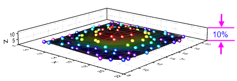
|
Diagrammzuordnungen der Arbeitsblattspalten
ArbeitsblattdiagrammzuordnungenSpaltendiagrammzuordnungenDiagrammzuordnung Die Beschriftungen (X), (Y), (Z) etc. in Spaltenüberschriften werden als Diagrammzuordnung der Spalten bezeichnet. Spalten können auch als Beschriftung, Ignorieren, Y-Fehler oder X-Fehler zugeordnet werden. Jeder Diagrammtyp hat bestimmte Datenanforderungen (z. B. erfordert ein einfaches Liniendiagramm einen X- und einen Y-Datensatz), und die Diagrammzuordnung der Spalten entspricht den Einstellungen, die in der Diagrammvorlage gespeichert sind, um Ihnen das schnelle Erstellen eines Diagramms zu ermöglichen.
Um die Diagrammzuordnung der Spalten festzulegen, wählen Sie eine oder mehrere Spalten. Wählen Sie dann im Menü Spalte: Setzen als:<Option> oder klicken Sie mit der rechten Maustaste und wählen Sie eine Option im Kontextmenü Setzen als:.
In dem ersten Tutorial oben haben wir 2D-Diagramme gezeichnet, die Y-Daten aus einer oder mehreren Arbeitsblattspalten erforderten. Die Y-Daten werden automatisch gegen die Daten der X-Spalte zu ihrer Linken gezeichnet. Im zweiten Tutorial haben wir ein 3D-Diagramm aus Z-Daten gezeichnet. Die Z-Daten wurden gegen X- und Y-Datenspalten links von der Spalte der Z-Daten gezeichnet.
Arbeitsblattdaten auswählen
Daten auswählen, ArbeitsblattBereich, ArbeitsblattdatenDatenbereichDaten auswählen, zum ZeichnenGrafische Darstellung ArbeitsblattdatenArbeitsblattdaten zeichnen Verschiedene Möglichkeiten, um Daten zum Zeichnen auszuwählen:
- Einzelne Spalte: Klicken Sie auf die Spaltenüberschrift, z.B. B(Y).
- Mehrere Spalten: Um einige nebeneinander liegende Spalten auszuwählen, klicken Sie auf die erste Spaltenüberschrift und ziehen Sie den Cursor bis zur letzten Spaltenüberschrift. Eine große Anzahl von nebeneinander liegenden Spalten wählen Sie aus, indem Sie auf die erste Spaltenüberschrift klicken, den Scrollbalken unten im Arbeitsblatt verwenden, um die letzte Spalte zu finden, dann die Shift-Taste drücken und auf die letzte Spaltenüberschrift klicken. Nicht nebeneinander liegende Spalten wählen Sie durch Drücken der Strg-Taste aus, während Sie auf die gewünschten Spaltenüberschriften klicken.
- Ein Bereich in einer Spalte: Klicken Sie auf die erste Zelle des Bereichs und ziehen Sie den Cursor bis zur letzten Zelle des Bereichs.
- Mehrere Bereiche innerhalb einer Spalte: Wählen Sie einen Bereich aus. Drücken Sie die Strg-Taste, während Sie jeden Bereich auswählen. Beim Zeichnen wird jeder Bereich als eine separate Datenzeichnung in einer Zeichnungsgruppe behandelt.
- Bereiche über mehrere Spalten: Wenn Zellen nebeneinander liegen, klicken Sie auf die erste Zelle und ziehen Sie den Cursor bis zur letzten Zelle. Wenn Zellen nicht nebeneinander liegen, drücken Sie die Strg-Taste, während Sie jeden Bereich auswählen. Jede Bereichsauswahl wird als eine separate Datenzeichnung in einer Zeichnungsgruppe behandelt.
- Bereich(e) über alle Spalten: Klicken Sie auf die erste Zeilenüberschrift und ziehen Sie den Cursor bis zur letzten Zeilenüberschrift, um mehrere Zeilen auszuwählen. Auf diese Weise werden Daten in allen Spalten im Arbeitsblatt ausgewählt. Drücken Sie die Strg-Taste, während Sie Zeilenüberschriften für nicht nebeneinander liegende Zeilen auswählen. Jede Bereichsauswahl wird als eine separate Datenzeichnung in einer Zeichnungsgruppe behandelt.
- Ganzes Arbeitsblatt: Drücken Sie Strg+A, um das gesamte Arbeitsblatt auszuwählen, oder fahren Sie mit der Maus über die untere rechte Ecke der leeren Zelle in der oberen linken Ecke des Arbeitsblatts. Wenn der Cursor ein nach unten zeigender Pfeil wird, klicken Sie einmal darauf, um das gesamte Arbeitsblatt auszuwählen.
- Spezifische Spalten: Um Spalten nach Daten in den Spaltenbeschriftungszeilen (Headerzeilen) oder Spalten mit Hilfe eines Musters auszuwählen, klicken Sie auf Bearbeiten: Auswählen.
|
Wie im Abschnitt Diagrammzuordnungen der Arbeitsblattspalten oben beschrieben, wenn Sie Y- oder Z-Spalten auswählen, zeichnet Origin die Y-Spalte gegen die am nächsten links liegende X-Spalte; oder Origin zeichnet die Z-Spalte gegen die am nächsten links liegenden Y- und X-Spalten. Wenn Ihnen aber einfache 2D-Diagramme mit XY vorliegen (Linie, Linie + Symbol etc.), können Sie diese Regel ignorieren und mit zeichnen, indem Sie XY-Spalten auswählen, unabhängig davon, ob sich die ausgewählte X-Spalte links oder rechts von Y befindet.
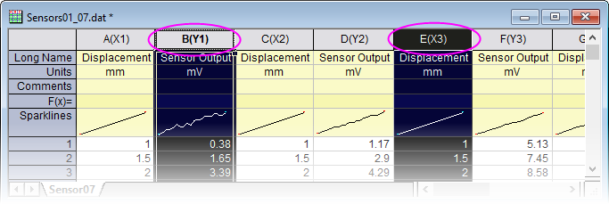
|
Diagramm aus Matrixdaten erstellen
Matrixdaten zeichnenMatrixdaten grafisch darstellen Wie im Kapitel Matrixmappe, Matrixblätter und Matrixobjekte erläutert, ist eine Matrix ein Datensatz aus Z-Werten, angeordnet in Spalten und Zeilen, die die Werte von X (Spalte) und Y (Zeile) linear abbilden. Matrixdaten werden verwendet, um 3D- und Konturdiagramme sowie Heatmaps zu erstellen -- diese erfordern alle "3D"-Daten. In älteren Versionen von Origin mussten sich Ihre Daten in einer Matrix befinden, um diese Diagrammtypen zu erstellen. Dies ist aber nicht mehr der Fall (siehe Erläuterung zur Virtuellen Matrix unten). Einige wenige Diagrammtypen wie das farbige Oberflächendiagramm mit Fehlerbalken benötigen noch immer Matrixdaten.
Es gibt noch viele Situationen gibt, in denen Sie 3D-Diagramme aus Matrixdaten erstellen. Wenn Daten in einem Arbeitsblatt gespeichert sind und Sie diese in eine Matrixform konvertieren müssen, lesen Sie bitte Arbeitsblätter in Matrizen umwandeln.
Sobald Ihre Daten in einer Matrixform sind, ist das Zeichnen der Matrixdaten einfach: Aktivieren Sie das Matrixfenster und wählen Sie dann Ihren Diagrammtyp über das Menü Zeichnen oder die entsprechende Schaltfläche der Symbolleiste 3D- und Konturdiagramme aus. Da Sie nicht nur einen Teil der Matrix zeichnen können, ist die Datenauswahl nicht notwendig. Sie können jedoch einen Teilbereich der Datenzeichnung wählen, der angezeigt wird, sobald das Diagramm erstellt ist. Siehe unten Diagrammbereich bearbeiten.
Virtuelle Matrix
Das Konzept Virtuelle Matrix wird im Kapitel Matrixmappe, Matrixblatt und Matrixobjekt dieses Handbuchs beschrieben. Zur Erinnerung: Eine virtuelle Matrix ist ein Block von Arbeitsblattzellen, die Z-Werte enthalten, mit X- und Y-Koordinaten in der ersten Zeile oder in der Spaltenbeschriftungszeile und in der ersten Spalte. X- und Y-Koordinaten müssen nicht äquidistant verteilt sein und können sogar Text- oder Datums-/Zeitdaten enthalten. Virtuelle Matrixdaten grafisch darstellenVirtuelle Matrixdaten zeichnen
Beim Auswählen und Zeichnen von virtuellen Matrixdaten in 3D- und Konturdiagramme sowie Heatmaps wird die Diagrammzuordnung der Spalten des Arbeitsblatts ignoriert. Stattdessen wird ein Dialog geöffnet, in dem Sie Ihre X- und Y-Koordinaten zuweisen. Die sich überschneidenden Datenpunkte werden dann als Z-Werte behandelt.
|
Tutorial: Konturdiagramm aus virtueller Matrix
- Wählen Sie bei einer neuen aktiven Arbeitsmappe im Menü Daten: Aus Datei importieren: Importassistent, um den Dialog Importassistent zu öffnen.
- Klicken Sie auf die Schaltfläche Durchsuchen (...) im Dialog und wählen Sie die Datei Waterfall.dat im Unterordner Samples\Graphing.
- Diese Datei ist bereits mit einem Importfilter verbunden. Klicken Sie auf die Schaltfläche Fertigstellen, um die Datei zu importieren.
- Drücken Sie bei aktiver Arbeitsmappe Strg+A, um das gesamte Blatt zu markieren.
- Wählen Sie jetzt Zeichnen > Kontur: Kontur-Farbabbildung. Der Dialog plotvm wird geöffnet:
- Setzen Sie im Dialog die Y-Werte in auf Spaltenbeschriftung und die Spaltenbeschriftung dann auf Excitation Wavelength (nm).
- Setzen Sie die X-Werte in auf 1. Spalte in Auswahl und klicken Sie dann auf OK, um diesen Dialog zu schließen.
- Das Konturdiagramm wird erstellt.
- Wählen Sie im Menü Grafik: Entwurfsmodus, setzen Sie dann in dem aufgerufenen Dialog die Auswahlliste Entwurfsmodus auf Aus und klicken Sie auf OK. Auf diese Weise wird der Entwurfsmodus ausgeschaltet, so dass alle Datenpunkte gezeichnet werden (siehe Erläuterung zum Entwurfsmodus unten).
- Klicken Sie auf das Konturdiagramm, um diese Datenzeichnung auszuwählen, klicken Sie auf die Schaltfläche Palette in der Symbolleiste Stil und wählen Sie dann die Palette Pumpkin Patch aus. Ihr Diagramm sollte ungefähr so aussehen wie im folgenden Bild:
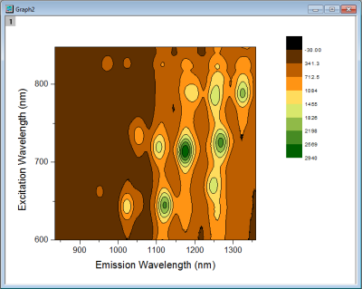
|
|
Sobald Sie Ihre Konturebenen und -farben benutzerdefiniert angepasst haben, können Sie Ihre Einstellungen als Design speichern oder diese einfach per Kopieren-Einfügen von einem auf ein anderes Diagramm übertragen. Um ein Design zu speichern, klicken Sie mit der rechten Maustaste auf das Diagramm und wählen Sie Format als Design speichern oder verwenden Sie die Bedienelemente unter Farbabbildungsdesign auf der Registerkarte Farbpalette/Kontur des Dialogs Details Zeichnung.
|
2D- und 3D-Funktionsdiagramme
Diagramme, Funktion Funktionen zeichnenGrafische Darstellung, Funktionen Funktionsdiagramme, 2D und 3D Parametrische Funktionsdiagramme, 2D und 3D
Anders als Diagramme aus Arbeitsblattdaten oder Matrixdaten sind parametrische Diagramme keine Diagramme aus tatsächlichen Daten. Stattdessen sind Sie Diagramme aus mathematischen Funktionen.
Um Funktionsdiagramme und parametrische Funktionsdiagramme zu erstellen, wählen Sie Datei: Neu: Funktionsdiagramm im Menü. Sie können zwischen vier Optionen auswählen:
| Typ |
Funktionsform |
| 2D-Funktionsdiagramm |
y = f(x) |
| Parametrisches 2D-Funktionsdiagramm |
x = f1(t)
y = f2(t) |
| 3D-Funktionsdiagramme |
z = f(x, y) |
| Parametrische 3D-Funktionsdiagramme |
x = f1(u, v)
y = f2(u, v)
z = f3(u, v) |
Auf diese Diagrammtypen können Sie auch über die Schaltfläche Funktionsdiagramm der Symbolleiste Standard zugreifen.
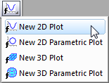
|
Tutorial: 3D-Funktions- und parametrisches 3D-Funktionsdiagramm im gleichen Layer
- Wählen Sie im Menü Datei: Neu: Funktionsdiagramm: Parametrisches 3D-Funktionsdiagramm.
- Klicken Sie in dem sich öffnenden Dialog auf die Schaltflächhe mit dem Pfeil rechts oben im Dialog, wählen Sie im Ausklappmenü das installierte Beispiel Partial Torus (System) und klicken Sie auf OK, um den Dialog zu schließen. Das Funktionsdiagramm wird erstellt.
- Wählen Sie bei aktivem Funktionsdiagrammfenster im Menü Datei: Neu: Funktionsdiagramm: 3D-Funktionsdiagramm.
- Geben Sie in dem aufgerufenen Dialog -5 und 5 in den Bearbeitungsfeldern Von bzw. Bis für die X- und Y-Skalierung ein.
- Geben Sie im Bearbeitungsfeld Z(x,y) eine 0 ein.
- Setzen Sie die Auswahlliste unten links im Dialog auf die Option Zu aktivem Diagramm hinzufügen und klicken Sie auf OK, um den Dialog zu schließen.
- Die Ebene Z=0 wird zu dem Diagramm hinzugefügt, und die Ebene überschneidet sich ordnungsgemäß mit dem parametrischen Oberflächendiagramm. Sie können die R-Taste auf Ihrer Tastatur gedrückt halten und die Maus dazu verwenden, das Diagramm in jede Richtung zu drehen.

|
- Einige Dialoge des Funktionsdiagramms enthalten Beispielformeln. Klicken Sie auf die Pfeilschaltfläche neben Design oben im Dialog, um auf sie zuzugreifen. Sie können mehr Beispiele unter http://originlab.com/3dfunctions herunterladen.
- Für parametrische 2D-, 3D- und parametrische 3D-Funktionsdiagramme werden Daten erzeugt, wenn das Funktionsdiagramm erstellt wird. Um Daten für 2D-Funktionsdiagramme zu erstellen, klicken Sie mit der rechten Maustaste auf die Zeichnung und wählen Sie Datensatzkopie der Funktion erstellen; oder klicken Sie, wenn Sie sich auf der Registerkarte Funktion im Dialog Details Zeichnung befinden, auf die Schaltfläche Arbeitsmappe.
- Sie können die Funktionsdiagramme aus der Diagrammlegende ausschließen, indem Sie mit der rechten Maustaste auf das ausgewählte Legendenobjekt klicken und setzen Sie ein Häkchen neben Legende: Legende für Funktionsdiagramme verbergen. (Um sie wieder zur Legende hinzuzufügen, entfernen Sie das Häkchen).
- Neben Funktionsdiagrammen können Sie auch Diagramme mit allen standardmäßigen und benutzerdefinierten nichtlinearen Funktionen für Kurvenanpassung und Oberflächenanpassung erstellen. Wählen Sie im Menü Analyse: Anpassen: Kurve simulieren oder Oberfläche simulieren. Sie können sogar Rauschen zu der Zeichnung hinzufügen. Die entsprechenden Daten werden ebenfalls erzeugt.
Funktionsdiagramme zu bestehenden Grafiken hinzufügen
Sie können Funktionsdiagramme zu existierenden Diagrammfenstern, die andere Diagrammtypen enthalten, hinzufügen. Siehe FAQ-171, speziell den Abschnitt mit dem Titel Funktionsdiagramm zu einer bestehenden Grafik hinzufügen.
Ohne Diagrammzuordnungen der Spalten zeichnen
SpaltenzuordnungenDiagrammzuordnungDiagrammzuordnung des Arbeitsblatts Während die Spaltenzuordnungen des Arbeitsblatts immer beim Erstellen von Diagrammen über das Menü Zeichnen oder eine der Diagrammsymbolleisten verwenden werden, nutzt der Dialog Diagrammeinstellungen sie nicht immer. Im Fall der Diagrammeinstellungen werden die Spaltenzuordnungen ad hoc zugewiesen, wodurch Ihnen die Möglichkeit gegeben ist, einige der Einschränkungen des vorlagenbasierten Zeichnens zu überwinden.
Um vollen Nutzen aus dem Dialog Diagrammeinstellungen zu ziehen, müssen Sie mit der Hierarchie der Objekte im Origin-Diagrammfenster vertraut sein. Diagrammseite Diagrammlayer Diagrammlayerrahmen Layer, Diagramm Seite, Diagramm
Seiten, Layer, Zeichnungen und die aktive Zeichnung
DiagrammseiteDiagrammlayerAktiver LayerLayersymbol, Diagramm Jedes Origin-Diagrammfenster besteht aus einer einzelnen, bearbeitbaren Diagrammseite. Die Diagrammseite wird durch die weiße Fläche innerhalb des Diagrammfensters definiert. Alles außerhalb der Seite liegende wird weder gedruckt noch exportiert. Standardmäßig werden die Abmessungen der Diagrammseite von dem druckbaren Bereich Ihres Standarddruckertreibers bestimmt. Ein gedrucktes Diagramm sollte die gedruckte Seite ausfüllen, wenn keine Änderungen an den Einstellungen vorgenommen wurden.
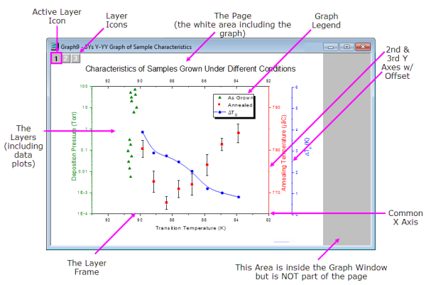
- Die Diagrammseite muss mindestens einen Layer und kann bis zu 1024 Layer enthalten.
- Jeder Diagrammlayer beinhaltet im Allgemeinen eine oder mehrere Datenzeichnung/en (grafische Darstellungen der Datensätze). Beachten Sie, dass das Diagramm in dem Bild oben über drei Diagrammlayer verfügt, die von den nicht druckbaren Layersymbolen in der oberen linken Ecke der Diagrammseite gekennzeichnet werden. Beachten Sie, dass es ein markiertes Layersymbol gibt, wodurch gekennzeichnet ist, dass es den aktiven Layer darstellt.
- So wie es nur einen aktiven Layer gibt, gibt es nur eine aktive Zeichnung in einem Diagramm. Normalerweise ist die aktive Zeichnung die erste Zeichnung im aktiven Layer. Um zu prüfen, welche Zeichnung aktiv ist, klicken Sie auf das Menü Daten, während das Diagramm aktiv ist. Die aktive Zeichnung ist mit ein nebenstehenden Häkchen versehen.

Die hierarchische Struktur der Diagrammseite kann an folgenden Stellen gesehen werden:
- Der Dialog Details Zeichnung (Format: Seite)Dialog Details Zeichnung
- Die Objektverwaltung (Ansicht: Objektverwaltung)Objektverwaltung
- Der Dialog Diagrammeinstellungen (Grafik: Setup Diagramm)Dialog Diagrammeinstellungen
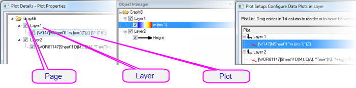
Dialog Diagrammeinstellungen
Der Dialog Diagrammeinstellungen ist ein flexibles All-in-One-Zeichenwerkzeug zum Erstellen von Diagrammen und Bearbeiten von Datenzeichnungen in einem bestehenden Diagramm.Dialog Diagrammeinstellungen
- Diagramme ohne Berücksichtigung der Diagrammzuordnung von Spalten erstellen
- Diagramme aus einer Kombination von Datenquellen erstellen: mehrere Arbeitsblätter, Arbeitsmappen, Matrixmappen, ungebundene Datensätze etc.
- Diagramme erstellen, die mehrere Diagrammtypen kombinieren
- Datenzeichnungen hinzufügen, entfernen, ersetzen
- Zeichnungen gruppieren oder die Gruppierung aufheben
- Datenzeichnungen in einem Layer neu ordnen oder Datenzeichnungen in einen anderen Layer verschieben
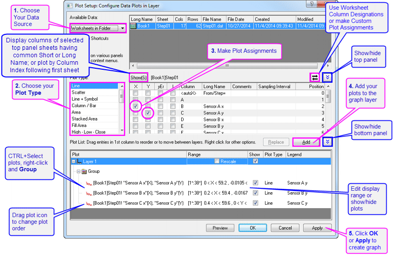
Um ein Diagramm mit dem Dialog Diagrammeinstellungen zu erstellen, stellen Sie sicher, dass in dem aktiven Arbeitsblatt keine Daten ausgewählt sind, und wählen Sie den Diagrammtyp, den Sie erstellen möchten (im Menü Zeichnen oder klicken Sie auf die Symbolleistenschaltfläche).
Klicken Sie mit der rechten Maustaste auf ein Layersymbol in der oberen linken Ecke des Diagrammfensters, um den Dialog Diagrammeinstellungen für ein bestehendes Diagrammfenster zu öffnen, und wählen Sie Setup Diagramm oder wählen Sie im Menü Grafik: Setup Diagramm.
|
Tutorial: Ein einfaches Liniendiagramm mit dem Dialog Diagrammeinstellungen erstellen
- Klicken Sie auf die Schaltfläche Neue Arbeitsmappe in der Symbolleiste Standard.
- Klicken Sie auf Daten: Aus Datei importieren: Einzelnes ASCII, durchsuchen Sie den Origin-Installationsordner und importieren Sie die Datei \Samples\Curve Fitting\Step01.dat. Angefangen bei Spalte B werden Spalten tatsächlich gepaart - X-Daten und Y-Daten. Standardmäßig wird allen Spalten jedoch die Diagrammzuordnung einer "Y"-Spalte beim Import zugewiesen.
- Klicken Sie ohne Datenauswahl auf Zeichnen > Einfache 2D: Liniendiagramm. Hierdurch öffnet sich das Dialogfeld Details Zeichnung.
- Klicken Sie auf die zwei Schaltflächen mit dem doppelten Pfeil, um alle drei Dialogbedienfelder anzuzeigen.
- Aktivieren Sie im mittleren Bedienfeld das Kästchen "X" für Spalte B (Sensor Ax) und das Kästchen "Y" für Spalte C (Sensor Ay). Klicken Sie dann auf die Schaltfläche Hinzufügen, um die Zeichnung zu Layer 1 im unteren Bedienfeld hinzuzufügen.
- Aktivieren Sie das Kästchen "X" für Spalte D (Sensor Bx) und das Kästchen "Y" für Spalte E (Sensor By). Klicken Sie dann auf Hinzufügen.
- Aktivieren Sie das Kästchen "X" für Spalte F (Sensor Bx) und das Kästchen "Y" für Spalte G (Sensor By). Klicken Sie dann auf Hinzufügen. Es werden drei Zeichnungen zu Layer 1 hinzugefügt.
- Drücken Sie die Strg-Taste und klicken Sie auf jede Zeichnung in dem unteren Bedienfeld, um alle drei zu markieren, klicken Sie mit der rechten Maustaste und wählen Sie Gruppieren.
- Klicken Sie auf OK, um ein gruppiertes Liniendiagramm zu erstellen.
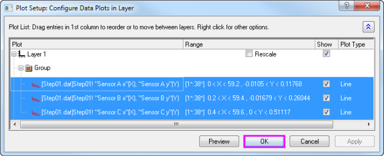
|
|
Tutorial: Ein Diagramm mit Daten aus mehreren Arbeitsblättern erstellen
- Klicken Sie auf die Schaltfläche Neue Arbeitsmappe in der Symbolleiste Standard.
- Klicken Sie auf Daten: Aus Datei importieren: Mehrere ASCII, durchsuchen Sie den Origin-Installationsordner und wählen Sie Sensor01.dat, Sensor02.dat und Sensor03.dat unter \Samples\Curve Fitting\ für den Import aus. Nach dem Import werden 3 Arbeitsmappen erstellt.
- Klicken Sie ohne Datenauswahl auf Zeichnen > Einfache 2D: Punkt-Liniendiagramm. Hierdurch öffnet sich das Dialogfeld Details Zeichnung.
- Erweitern Sie das obere Bedienfeld, falls es ausgeblendet sein sollte. Wählen Sie in der Liste Verfügbare Daten die Option Arbeitsblätter im Ordner.
- Wählen Sie die Blätter Sensor01, Sensor02 und Sensor03 im oberen Bedienfeld.
- Aktivieren Sie im mittleren Bedienfeld das Kästchen "X" für Spalte A (Displacement) und das Kästchen "Y" für Spalte B (Sensor Output). Klicken Sie dann auf die Schaltfläche Hinzufügen.
- Klicken Sie auf OK, um ein gruppiertes Punkt-Liniendiagramm mit den Spalten Sensor Output aus 3 Arbeitsblättern zu erstellen.
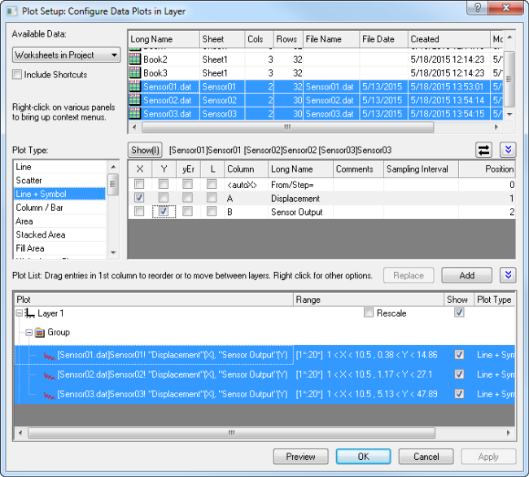
|
- Im mittleren Bedienfeld der Diagrammeinstellungen können Sie nur eine X-Spalte gleichzeitig auswählen.
- Wenn Ihr Arbeitsblatt mit den korrekten Spaltenzuordnungen eingerichtet ist (z.B. XYXY), Sie aber nur Spalten mit gleichen Langnamen haben möchten, klicken Sie in der oberen rechten Ecke des mittleren Bedienfelds auf die Schaltfläche zum Umschalten, so dass nur zeichenbare Spalte gezeigt werden (z.B. werden für 2D-Diagrammtypen keine X-Spalten gezeigt). Sie können dann die Spalten sortieren und alle Spalten mit dem gleichen Langnamen auswählen und diese zusammen zeichnen. Die Y-Spalten werden gegen die entsprechenden X-Spalten gezeichnet.
- Wählen Sie die entsprechende Zeichnung im unteren Bedienfeld, um den Typ einer Datenzeichnung zu ändern. Die entsprechenden X- und Y-Spalten werden im mittleren Bedienfeld gezeigt. Wählen Sie einen neuen Diagrammtyp im mittleren Bedienfeld und klicken Sie auf die Schaltfläche Ersetzen.
- Alle Datenzeichnungen in einer Gruppe teilen den gleichen Diagrammtyp. Wenn Sie den Diagrammtyp einer einzelnen Zeichnung in einer Gruppe ändern möchten, klicken Sie mit der rechten Maustaste auf den Zweig Gruppe im unteren Bedienfeld und heben Sie die Gruppierung zuerst auf.
- Verschieben Sie die Datenzeichnungen im unteren Bedienfeld per Drag&Drop in verschiedene Layer.
- Wenn das untere Bedienfeld ausgeblendet ist und Sie Spalten im mittleren Bedienfeld ausgewählt haben, können Sie direkt auf die Schaltfläche OK klicken, um Ihr Diagramm zu erstellen.
Datenzeichnungen bearbeiten
Die folgenden Abschnitte befassen sich mit weiterführenden Modifikationen bestehender Diagramme, z. B. Ändern des Diagrammtyps, Hinzufügen oder Entfernen von Zeichnungen zu/aus dem Layer und Steuern der Dichte der gezeichneten Punkte (Entwurfsmodus). Ausführliche Diagrammanpassungen, einschließlich Änderungen von Zeichnungsymbolen und -farben sowie Legendenanpassungen finden Sie im Kapitel Diagramme benutzerdefiniert anpassen.
Diagrammtyp ändern
Diagrammtyp, ändernZeichnungen, austauschen Bei einigen Origin-Diagrammtypen (z.B. Punkt, Linie, Punkt+Linie) können Sie den Diagrammtyp eines bestehenden Diagramms mit ein paar anderen ausgewählten Diagrammtypen austauschen. Einige Beispiele:
- Punkt-, Linien-, Punkt-Linien-, Säulen-/Balkendiagramme sind austauschbar.
- 3D-Punkt-/Ankerlinien-/Vektor-, 3D-Balken- sowie 3D-Oberflächendiagramme sind austauschbar.
Um den Diagrammtyp einer bestehenden Zeichnung zu ändern:
- Klicken Sie mit der rechten Maustaste auf die Datenzeichnung und wählen Sie im Kontextmenü Diagramm ändern in:Diagrammtyp aus.
- Klicken Sie auf die Datenzeichnung, wählen Sie Format: Zeichnung und wählen Sie im Dialog Details Zeichnung den Diagrammtyp in der Auswahlliste.
- Klicken Sie auf die Datenzeichnung und klicken Sie dann auf eine der unterstützten Symbolleistenschaltflächen der Grafiken.
Beachten Sie, dass alle Zeichnungen in der Gruppe gewechselt werden, wenn Sie den Diagrammtyp ändern und die ausgewählte Zeichnung Teil einer Zeichnungsgruppe ist.
 |
Eine kleine Warnung: Dies ist eine alte Origin-Funktion und für eine schnelle Änderung von gängigen Diagrammtypen in einer Grafik mit einem Layer eignet sich diese Methode gut. Sollten Sie jedoch die Diagrammtypen in einer Grafik mit mehreren Feldern und Layern ändern, kann sie zu unerwünschten Resultaten führen. Beim Arbeiten mit komplexeren Diagrammen ist es besser, ein Diagramm direkt über das Menü Zeichnen oder die entsprechende Schaltfläche auf der Symbolleiste zu erzeugen.
|
Datenzeichnungen austauschen
Zeichnungen, Hinzufügen/Entfernen/VerbergenDiagrammzuordnungDiagrammzuordnung des ArbeitsblattsDiagrammzuordnung der Spalten
Sie können die Datenquelle (X, Y oder Arbeitsblatt) einer Zeichnung schnell mit Hilfe dieser Kontextmenübefehle ändern. Klicken Sie mit der rechten Maustaste auf eine Datenzeichnung und wählen Sie eine von diesen Optionen aus:
- X,Y,Z ändern Mit diesen Menüelementen können Sie die aktuellen X-, Y- und Z-Daten mit den Daten aus einer beliebigen Spalte im Projekt austauschen.
- Spalten auswählen Dies öffnet den Spaltenbrowser, in dem Sie eine weitere Spalte im Aktuellen Ordner, Aktuellen Ordner (rekursiv) (schließt Unterordner mit ein) oder Aktuellen Projekt auswählen können.
- Arbeitsblatt ändern Mit diesem Menüelement können Sie sowohl X und Y mit Daten aus einem anderen Arbeitsblatt ersetzen. Das ausgewählte Arbeitsblatt sollte die gleichen Kurznamen, die gleiche Zuordnung der Spalten und den gleichen Zeilenindexbereich haben wie das aktuelle Arbeitsblatt.
|
Tutorial: Zuordnung von X und Y einer Datenzeichnung ändern
- Öffnen Sie eine neue Arbeitsmappe und importieren Sie die Datei automobile.dat aus dem Unterordner Samples\Statistics des Origin-Installationsverzeichnisses.
- Wählen Sie die Spalte Gas Mileage und im Menü Zeichnen: Einfache 2D: Punktdiagramm. Die Spalte Gas Mileage wird gegen die Standardspalte für X Year gezeichnet.
- Klicken Sie mit der rechten Maustaste auf die Datenzeichnung und wählen Sie X ändern: Engine Displacement. Die Spalte Gas Mileage wird jetzt gegen Engine Displacement gezeichnet.
|
| Hinweis: Wenn die neuen Daten signifikant außerhalb des aktuellen Bereichs für X- oder Y-Achsen liegen, werden Sie gefragt, ob die Zeichnung neu skaliert werden soll. Wenn Daten sich nicht signifikant unterscheiden, möchten Sie die Zeichnung vielleicht manuell neu skalieren (Tastenkombination: Strg + R). |
|
Wenn Sie eine Analyse auf die Datenzeichnung durchgeführt haben (z. B. eine lineare Regression, bei der Neu berechnen auf Auto gesetzt ist), werden die Anpassungsergebnisse automatisch aktualisiert, sobald Sie X/Y oder das Arbeitsblatt ändern.
|
Datenzeichnungen hinzufügen, entfernen und verbergen
Diagramme, Zeichnungen hinzufügen oder entfernen Verwenden Sie die folgenden Methoden, um Datenzeichnungen zu/aus einem Diagramm hinzuzufügen oder zu entfernen.
Daten per Drag&Drop hinzufügen
Diagramme, Daten per Drag&Drop hinzufügenZeichnen per Drag&Drop Sie können Daten per Drag&Drop zu einem Diagramm hinzufügen. Wenn Sie diese Methode verwenden, legt Origin bei Erstellung des Diagramms die Diagrammzuordnung der Arbeitsblattspalten zugrunde.
- Wählen Sie die Arbeitsblattdaten (eine oder mehrere Spalten bzw. einen Bereich aus einer oder mehreren Spalten) aus.
- Verschieben Sie die Maus über die linke oder rechte Kante des ausgewählten Bereichs.
- Wenn der Mauszeiger folgendermaßen aussieht
 , halten Sie die linke Maustaste gedrückt und ziehen Sie die Daten zum Diagrammfenster. Lassen Sie die Maustaste los.
, halten Sie die linke Maustaste gedrückt und ziehen Sie die Daten zum Diagrammfenster. Lassen Sie die Maustaste los.
- Gibt es in dem Diagramm mehrere Layer, ziehen Sie die Daten zu dem gewünschten Layer und lassen Sie dann die Maus los.
|
Normalerweise wird beim Zeichnen per Drag&Drop der aktuelle Diagrammtyp verwendet. Um den globalen Diagrammtyp zu ändern, der bei Drag&Drop verwendet wird, wählen Sie Einstellungen: Optionen im Hauptmenü. Wechseln Sie zur Registerkarte Grafik und ändern Sie den Diagrammtyp unter "Drag and Drop" Diagramm.
|
Daten mit Einfügen: Zeichnung in Layer hinzufügen
Diagramme, Daten durch Zeichnung in Layer einfügen hinzufügen Verwenden Sie das Menü Einfügen, um einige Diagrammtypen in den aktiven Diagrammlayer einzufügen. Die Wahl des Diagrammtyps hängt vom aktiven Diagrammtyp des aktiven Diagrammfensters und der zuletzt aktiven Datenquelle (Arbeitsblatt oder Matrix) ab. Wenn Sie zum Beispiel ein 2D-Diagramm erstellen, wählen Sie Daten in einem Arbeitsmappenfenster aus, kehren dann zum Diagrammfenster zurück und klicken auf Einfügen: Zeichnung in Layer. Sie können sich für Linie, Punkt, Linie + Symbol, Säulen ..., Fläche und Kontur... entscheiden.
Um den Menübefehl Einfügen zu verwenden, sollten Sie ein Diagrammfenster vorliegen haben:
- Gehen Sie zum Arbeitsblatt- oder Matrixfenster und wählen Sie Ihre/n Datensatz/-sätze aus.
- Kehren Sie zum Diagrammfenster zurück. Stellen Sie sicher, dass der Ziellayer der aktive Layer ist. Wählen Sie dann Einfügen: Zeichnung in Layer: Diagrammtyp.
Daten mit dem Dialog Layerinhalt hinzufügen oder entfernen
Diagramme, Dialog Layerinhalt Dialog Layerinhalt Öffnen Sie den Dialog Layerinhalt, indem Sie doppelt oder mit der rechten Maustaste auf das/die Layersymbol/e in der oberen linken Ecke der Diagrammseite klicken. Die Bedienelemente im linken Bedienfeld können verwendet werden, um verfügbare Datensätze zu filtern und aufzulisten. Das rechte Bedienfeld führt die Datensätze auf, die in dem aktiven Layer gezeichnet sind.
-
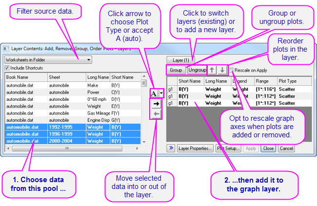
Mit den Bedienelementen im mittleren Bereich des Dialogs können Sie Zeichnungen zu dem aktiven Diagrammlayer hinzufügen oder sie aus ihm entfernen. Beim Hinzufügen von Daten zu dem Diagramm klicken Sie auf die Schaltfläche der Liste (nach unten zeigender Pfeil), um den Diagrammtyp vorauszuwählen, bevor Sie die Daten zu dem Layer hinzufügen. Verwenden Sie die Bedienelemente im rechten Bedienfeld zum Gruppieren der Zeichnungen bzw. zum Aufheben der Gruppierung oder ordnen Sie die Zeichnungen in dem Layer neu.
Datenzeichnungen mit dem Dialog Diagrammeinstellungen hinzufügen, entfernen, ersetzen und verbergen
Zeichnungen, Hinzufügen/Entfernen/VerbergenDialog Diagrammeinstellungen Der Dialog Diagrammeinstellungen kann unter anderem dazu verwendet werden, Datenzeichnungen zu dem Diagramm hinzuzufügen bzw. diese aus ihm zu entfernen.
- Verwenden Sie das obere Bedienfeld von Diagrammeinstellungen, um Ihre Quelldaten zu identifizieren und Zeichnungen zu dem Diagramm hinzuzufügen.
- Verwenden Sie die Bedienelemente im mittleren Bedienfeld, um den Diagrammtyp und die Art und Weise, wie die Datenauswahl behandelt werden soll (als X, Y, yError oder Beschriftung), festzulegen.
- Wählen Sie im unteren Bedienfeld den Layer, zu dem Sie Zeichnungen hinzufügen möchten. Klicken Sie dann auf die Schaltfläche Hinzufügen.
- Um eine Zeichnung aus dem Layer zu entfernen, wählen Sie die Zeichnung im unteren Bedienfeld, klicken Sie dann mit der rechten Maustaste und wählen Sie Entfernen.
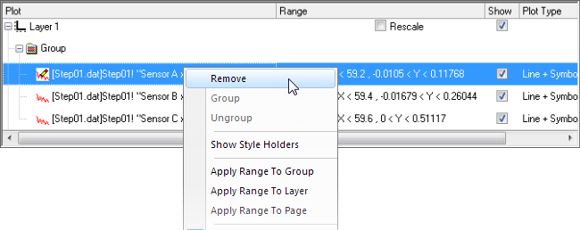
- Deaktivieren Sie das Kontrollkästchen Zeigen für die Zeichnung, um diese zu verbergen.
- Um eine Zeichnung zu ersetzen, wählen Sie die Zeichnung im unteren Bedienfeld, ändern Sie dann die X- und Y-Auswahl und den Diagrammtyp im mittleren Bedienfeld und klicken Sie auf die Schaltfläche Ersetzen. Beachten Sie, dass auch das Ersetzen von einer 3D-/Konturdiagramm-/Bildmatrix durch eine andere unterstützt wird.
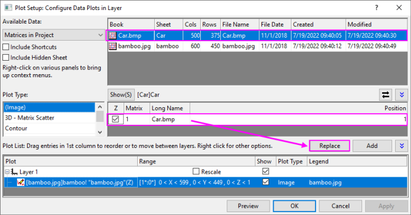
Daten durch direkten ASCII-Import hinzufügen
Diagramme, Direkter ASCII-ImportASCII-Daten, in Diagramm importieren Sie können ASCII-Dateien mit der Symbolleistenschaltfläche ASCII-Dateidaten direkt in das aktive Diagrammfenster importieren. Beachten Sie, dass diese Methode nur im Fall von Dateien angewendet werden kann, die eine einfache Struktur besitzen. Es werden auch nur die einfachsten Diagrammtypen unterstützt - Linie, Punkt, Punkt-Linie, Säulen und Balken.
- Klicken Sie auf die Schaltfläche ASCII-Dateidaten
 . Der Dialog des ASCII-Imports wird geöffnet.
. Der Dialog des ASCII-Imports wird geöffnet.
- Wählen Sie eine Datei.
- Klicken Sie auf Öffnen.
Die Datei wird importiert und im aktiven Diagrammfenster gezeichnet.
Daten durch Kopieren und Einfügen einer Zeichnung hinzufügen
Bei vielen einfachen 2D-Diagrammen (z. B. Punkt, Linie, Linie + Symbol, Blasen etc.) können Sie eine Zeichnung aus einem vorhandenen Diagrammlayer kopieren und in einen anderen Layer im gleichen Fenster oder in ein separates Diagrammfenster einfügen. Vor Origin 2020 würde dies nur ein schwarzes Liniendiagramm erzeugen. Origin 2020 erweiterte das Kopieren-Einfügen von Diagrammen auf weitere Diagrammtypen, wobei die Diagrammeigenschaften bewahrt bleiben (Symbolgröße, Farbe etc.).
- Klicken Sie auf die Zeichnung, um sie auszuwählen, und drücken Sie dann STRG + C.
- Klicken Sie auf das Zieldiagramm und drücken Sie STRG + V.
Sie können auch eine Zeichnung kopieren, indem Sie die Zeichnung in der Grafik auswählen und auf die Schaltfläche Zeichnung kopieren in der Minisymbolleiste klicken.

|
In früheren Versionen konnten Sie ein einfaches Diagramm (Linie, Punkt, Linie + Symbol, 2D-Säulen/-Balken) auswählen und kopieren und zugrundeliegende Daten in ein Arbeitsblatt einfügen. Die Standardeinstellungen unterstützen dies nicht mehr, aber Sie können dieses Verhalten umkehren, indem Sie die LabTalk-Systemvariable @CPNP = 1 setzen.
|
Zeichnungen mit der Objektverwaltung entfernen oder verbergen
Die Objektverwaltung Die Objektverwaltung ist ein andockbares Bedienfeld, mit dem Sie Diagrammlayer und Datenzeichnungen einfach bearbeiten können. Lesen Sie bitte den Abschnitt zur Objektverwaltung in diesem Handbuch.
Klicken Sie mit der rechten Maustaste auf die Zeichnung und wählen Sie zum Verbergen bzw. Entfernen von Zeichnungen im Kontextmenü:
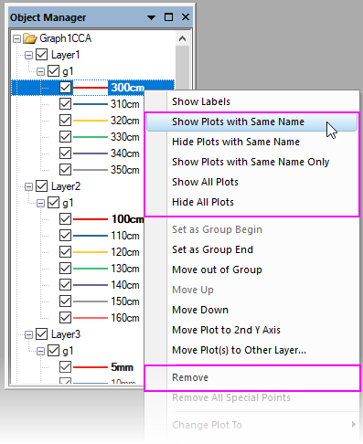
- Zeichnungen mit dem gleichen Langnamen zeigen oder verbergen
- Alle Zeichnungen zeigen
- Entfernen Sie eine Zeichnung aus dem Diagrammfenster (verborgene Zeichnungen können schnell wieder angezeigt werden, entfernte Zeichnungen müssen mit einer der obigen Methoden erneut hinzugefügt werden).
- Wenn die Zeichnung Teil einer Gruppe ist, können Sie mit der rechten Maustaste auf eine einzelne Zeichnung klicken und genau diese Zeichnung entfernen oder Sie können mit der rechten Maustaste auf das Gruppensymbol klicken und die gesamte Zeichnungsgruppe entfernen.
- Wenn Sie mit der rechten Maustaste auf eine Zeichnung klicken, können Sie die Kontextmenübefehle Zeichnungen mit gleichem Namen verbergen und Alle Zeichnungen verbergen verwenden, um schnell ausgewählte Zeichnungen im Fenster zu verbergen, ohne sie gänzlich zu entfernen (Sie stellen Zeichnungen wieder her, indem Sie ihre Anzeige in der Objektverwaltung oder in Dialog Details Zeichnung aktivieren).
Daten mit dem Dialog Details Zeichnung entfernen oder verbergen
Im linken Bedienfeld des Dialogs Details Zeichnung (Format: Zeichnung) klicken Sie mit der rechten Maustaste auf eine Zeichnung und wählen Sie Entfernen oder Verbergen im Kontextmenü. Die Option Entfernen löscht die Datenzeichnung aus dem Diagramm. Wenn Sie eine Zeichnung also nur temporär verbergen möchten, wählen Sie Verbergen. Keine der beiden Optionen löscht die Daten aus dem Arbeitsblatt bzw. der Matrix.
-
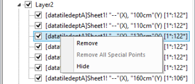
Zeichnungen mit der Taste Entfernen löschen
Klicken Sie auf eine Datenzeichnung (entweder im Diagrammfenster oder in der Objektverwaltung) und drücken Sie die Taste Entfernen. Wenn die ausgewählte Zeichnung Teil einer Gruppe ist, wird die gesamte Gruppe entfernt.
Beachten Sie, dass dies umfassender ist als der Befehl Entfernen im Kontextmenü, da eine ganze Zeichnungsgruppe aus dem Diagrammfenster entfernt wird. Diese Aktion löscht keine Arbeitsblatt- oder Matrixdaten.
Um die gelöschten Zeichnungen wiederherzustellen, wählen Sie Bearbeiten: Zeichnung entfernen rückgängig machen im Hauptmenü.
Diagrammbereich bearbeiten
Sobald ein Diagramm erstellt wurde, können Sie den Anzeigebereich der Zeichnung bearbeiten, indem Sie nur einen Teil der gezeichneten Daten festlegen:
- Klicken Sie mit der rechten Maustaste auf die Zeichnung und wählen Sie Bereich bearbeiten im Kontextmenü. Bearbeiten Sie die Werte Von und Bis.
- Blenden Sie im rechten Bedienfeld des Dialogs Layerinhalt (Grafik: Layerinhalt) die Spalte Bereich ein, indem Sie mit der rechten Maustaste auf die Spaltenüberschriften klicken und die Option Bereich wählen. Klicken Sie auf die Bereichswerte einer Zeichnung und dann auf die Schaltfläche ..., die rechts neben dieser Spalte angezeigt wird.
- Klicken Sie im unteren Bedienfeld des Dialogs Diagrammeinstellungen (Grafik: Setup Diagramm) auf den Zeichnungsbereich der Spalte Bereich und klicken Sie auf die Schaltfläche ..., die rechts von dieser Spalte angezeigt wird.
Nach Hinzufügen/Entfernen von Datenzeichnungen neuskalieren
Das Hinzufügen oder Entfernen der Datenzeichnungen zu bzw. aus einem 2D- oder 3D-Diagramm kann dazu führen, dass die Achsen neu skaliert werden müssen.
- Im Allgemeinen fragt Origin den Anwender, wie die Neuskalierung durchgeführt werden soll.
- Die Dialoge, die zum Hinzufügen oder Entfernen von Datensätzen zu bzw. aus einer Zeichnung (z. B. Layerinhalt) verwendet werden, verfügen typischerweise über ein Kontrollkästchen zum Neuskalieren.
- Sie können den Layer auch vorher auswählen und dann auf die Schaltfläche Automatische Neuskalierung der Minisymbolleiste klicken, um die Neuskalierung automatisch durchzuführen. Dies ist äquivalent zum Öffnen des Dialogs Achsen auf der Registerkarte Skalierung und dem Festlegen von Neu skalieren = Auto.
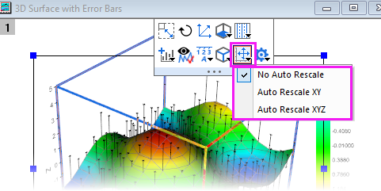
- Wählen Sie im Menü Grafik: Neu skalieren, um das Diagramm nach der Bearbeitung des Zeichnungsbereichs neu zu skalieren.
Datenzeichnungen gruppieren
Diagramme, Zeichnungen gruppierenZeichnungen gruppieren Wenn Sie mehrere Bereiche oder Spalten auswählen und ein Diagramm erstellen, gruppiert Origin die entstehenden Datenzeichnungen in dem Diagrammlayer. Dies gilt für die meisten 1D- (statistischen) und 2D-Diagramme plus 3D-XYY (3D-XYY-Balken-, 3D-Band-, 3D-Wand- und 3D-Wasserfalldiagramme) sowie 3D-XYZ-Diagramme (3D-Punkt, 3D-Balken).
Gruppieren ermöglicht Ihnen das schnelle Erstellen von präsentationsfertigen Diagrammen, da jede Zeichnung in der Gruppe unterschiedliche Attribute besitzt (Linienfarbe = schwarz, rot, grün...; Symbolform = Quadrat, Kreis, Dreieck... usw.). Zuweisungen werden durch ein periodisches Durchlaufen einer vordefinierten (benutzerdefinierbaren) Inkrementliste von Stilen gemacht. Beispiel: Die erste Zeichnung einer Gruppe von Liniendiagrammen könnte durch eine schwarze Linie gekennzeichnet sein; die zweite Zeichnung könnten durch eine rote Linie (der zweiten Farbe in der Farbliste) gekennzeichnet sein; die dritte Zeichnung könnte durch eine grüne Linie (der dritten Farbe der Farbliste) gekennzeichnet sein und so weiter.
|
Tutorial: Zeichnungen manuell gruppieren (oder Gruppierung aufheben)
- Über den Dialog LayerinhaltDialog Layerinhalt
- Um den Dialog Layerinhalt zu öffnen, klicken Sie doppelt auf das gewünschte Symbol für Layer n oben links im Diagrammfenster.
- Zum Erzeugen einer Gruppe wählen Sie die gewünschten Datensätze aus der Liste Inhalt des Layers (mit Strg + Auswahl, Shift + Auswahl oder einfach durch Ziehen der Maus, um mehrere Datensätze auszuwählen).
- Klicken Sie auf Gruppe. Beachten Sie, dass jedes Diagramm in der Liste Inhalt des Layers jetzt von einem gn (für "Gruppe1", "Gruppe2" usw.) angeführt wird.
- Zum Aufheben der Gruppe klicken Sie auf eine der gruppierten Datenzeichnungen in der Liste Layerinhalt und klicken Sie auf Gruppe auflösen.
- Über den Dialog DiagrammeinstellungenDialog Diagrammeinstellungen
- Um den Dialog Diagrammeinstellungen zu öffnen, klicken Sie doppelt auf das Symbol für Layer n oben links im Diagrammfenster.
- Um eine Gruppe zu erstellen, wählen Sie die gewünschten Diagramme aus der Diagrammliste (verwenden Sie die Tasten Strg oder Shift, um mehrere Datensätze auszuwählen).
- Klicken Sie mit der rechten Maustaste und wählen Sie Gruppieren aus. Beachten Sie, dass den ausgewählten Diagrammen der Liste jetzt ein Gruppen-Symbol vorangestellt ist.
- Um die Gruppierung aufzuheben, klicken Sie mit der rechten Maustaste auf das Symbol Gruppierung und wählen Sie Gruppierung aufheben im Kontextmenü.
|
Entwurfsmodus
Diagramme, Entwurfsmodus EntwurfsmodusDatenreduktion, Diagramme Mit dem Entwurfsmodus können Sie die Anzahl der Datenpunkte, die in einem Diagrammlayer angezeigt werden, steuern. Diese Option wird am meisten bei der Arbeit mit großen Datensätzen eingesetzt. Beachten Sie jedoch, dass in diesem Bereich Verbesserungen vorgenommen wurden und Origin jetzt über die Diagrammvorlagen Dichtepunkte und Farbpunkte verfügt, speziell für das Erstellen von Punktdiagrammen sehr großer Datensätze.
Der Entwurfsmodus lässt sich auf jedes beliebige 2D- oder 3D-Diagramm anwenden. Wenn der Entwurfsmodus aktiviert ist, wird das Layersymbol in Rot angezeigt und der Banner Entwurfsmodus eingeschaltet im Layer angezeigt. Der Banner wird nicht angezeigt, wenn Sie das Diagramm ausdrucken, kopieren oder exportieren.
-
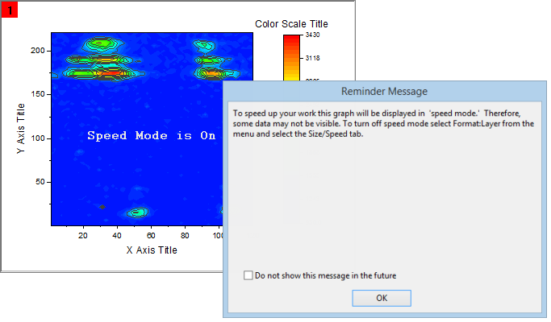
Um die Einstellungen des Entwurfsmodus anzupassen:
- Wählen Sie bei aktivem Diagramm Format: Layer im Origin-Menü.
- Wechseln Sie zur Registerkarte Anzeige und Performance.
- Aktivieren Sie für Zeichnungen, die aus Arbeitsblattdaten erstellt wurden, das Kontrollkästchen Worksheet Daten: maximale Punktzahl pro Kurve, um den Entwurfsmodus für alle Datenzeichnungen in dem Layer zu aktivieren. Geben Sie den gewünschten Wert (n) in das zugehörige Textfeld ein. Ist die Anzahl der Datenpunkte in einem Diagramm größer als n, zeigt Origin eine Teilmenge des Diagramms mit n Punkten an, die gezeichnet wird, indem in regelmäßigen Intervallen Werte aus dem Datensatz extrahiert werden.
- Aktivieren Sie für 3D-Diagramme, die aus einer Matrix erstellt wurden, oder für Konturdaten in dem Layer das Kontrollkästchen Matrix Daten: maximale Punktzahl pro Dimension, um den Entwurfsmodus zu aktivieren. Geben Sie den gewünschten Wert (n, m) in die Textfelder X und Y ein. Wenn die Anzahl der Datenpunkte in einer Datenzeichnung n oder m überschreiten, zeigt Origin eine Teilmenge der Datenzeichnung an, die aus -- maximal -- n mal m Punkten besteht. Diese Teilmenge wird durch regelmäßiges Extrahieren von Werten aus den Matrixspalten (X) und -zeilen (Y) gezeichnet.
Für eine umfangreiche Einstellung können Sie Entwurfsmodus Im Menü Grafik auswählen. Der Dialog der X-Funktion speedmode wird aufgerufen. In diesem Dialog können Sie festlegen, auf welche Fenster die Einstellungen angewendet werden sollen (Ziel) und bietet auch mehrere Stufen auf der Datenzeichnung, von Aus bis Hoch plus Benutzerdefiniert.
|
Klicken Sie auf die Schaltfläche Entwurfsmodus aktivieren/deaktivieren  der Symbolleiste Diagramm, um den Entwurfsmodus für alle Layer im Diagrammfenster ein-/auszuschalten. der Symbolleiste Diagramm, um den Entwurfsmodus für alle Layer im Diagrammfenster ein-/auszuschalten.
|
Um das Banner Entwurfsmodus eingeschaltet zu deaktivieren:
- Wählen Sie Einstellungen: Optionen, um den Dialog Optionen zu öffnen.
- Wählen Sie die Registerkarte Grafik und deaktivieren Sie das Kontrollkästchen Entwurfsmodus zeigt Wasserzeichen. Aktualisieren Sie das Diagramm gegebenenfalls. Beachten Sie, dass diese Option nur das Banner über dem Diagramm deaktiviert; es deaktiviert nicht den Entwurfsmodus.
|
Es gibt auf Seitenebene eine Minisymbolleistenschaltfläche, um den Banner für Entwurfsmodus auf der individuellen Diagrammebene ein-/auszuschalten.
-
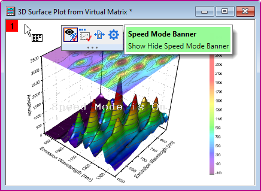
|
Hinweise zum Entwurfsmodus
- Neben dem Entwurfsmodus verfügt Origin über einen weiteren verallgemeinerten Mechanismus zur Datenreduktion für Zeichnungen mit Streupunkten (z. B. Linie & Symbol). Die Registerkarte Anzeige auf Zeichnungsebene des Dialogs Details Zeichnung verfügt über eine Auswahlliste Anzeige von Datenpunkten, so dass Sie bei einer von mehreren Methoden systematisch das Zeichnen von Punkten überspringen können (z. B. Punkte nach Inkrement überspringen).
- Mit LabTalk kann gesteuert werden, wo das Überspringen beginnt (z. B. layer.plot1.symbol.skipstart=10 beginnt bei Zeile 10 mit dem Überspringen).
- Punkte auslassen und Entwurfsmodus zeichnen jetzt standardmäßig den letzten Datenpunkt (gesteuert durch die Systemvariable @SMEP).
- Die Einstellungen des Entwurfsmodus auf der Registerkarte Anzeige und Performance im Dialog Details Zeichnung (Layerebene) werden nur auf das angewendet, was Sie auf dem Bildschirm sehen. Sie werden nicht auf Diagramme angewendet, die standardmäßig gedruckt oder exportiert werden.
- Wenn Sie auf Ihren Ausdrucken Punkte auslassen möchten, verwenden Sie die Bedienelemente im Dialog Drucken. Lesen Sie die Erläuterungen in der Origin-Hilfe zur Funktion Punkte auslassen, da diese auf einige Diagrammfenster angewendet wird.
- Wenn Sie die Einstellungen des Entwurfsmodus auf den Export von Grafiken anwenden möchten, lesen Sie bitte die Beschreibung der Bedienelemente unter Performance auf der Registerkarte Allgemeines des Dialogs Details Zeichnung oder verwenden Sie die Bedienelemente im Zweig Exporteinstellungen im Dialog Grafiken exportieren.
- Die Einstellungen des Entwurfsmodus werden in einer Diagrammvorlage gespeichert. Wenn Sie Änderungen an den Einstellungen des Entwurfsmodus für einen bestimmten Diagrammtyp vornehmen, müssen Sie die Diagrammvorlage erneut speichern, um diese Änderungen permanent zu übernehmen.
- Verwenden Sie den Entwurfsmodus mit gutem Urteilsvermögen. Da der Entwurfsmodus systematisch einen Teil Ihrer Datenpunkte entfernt, kann jedes Diagramm, für das der Entwurfsmodus eingeschaltet ist, Ihren gesamten Datensatz zu Ihrer Zufriedenheit exakt repräsentieren -- oder eben nicht. Machen Sie sich mit Ihren Daten vertraut und passen Sie die Einstellungen des Entwurfsmodus an bzw. vergleichen Sie sie, um sicher zu stellen, dass Ihre Daten korrekt dargestellt werden.
Ihr Diagramm veröffentlichen: Kopieren/Einfügen, Bildexport, Slide-Shows und Drucken
Es gibt einige Möglichkeiten, um Ihr fertig gestelltes Diagramm zu präsentieren.
- Kopieren Sie eine Diagrammseite und fügen Sie sie in anderen Anwendungen wie Word, Powerpoint etc. ein.
- Exportieren Sie die Diagrammseite als eine Bilddatei (Raster oder Vektor).
- Grafiken an PowerPoint senden
- Drucken Sie sie aus.
- Zeigen Sie die Slide-Show in Origin an.
- Erstellen Sie Animationen.
Bitte lesen Sie die Einzelheiten in dem Kapitel Veröffentlichung und Export in diesem Handbuch sowie die angegebenen "Weiterführenden Themen".
Origin-Diagrammtypen
Diagrammtypen Origin unterstützt über 100 Diagrammtypen. Origins 2D-Diagramme werden auf Grundlage von Arbeitsblattdaten gezeichnet. Origins 3D-Diagramme werden aus Arbeitsblattdaten gezeichnet (XYY, XYZ), aus einer Arbeitsblattanordnung, die wir als Virtuelle Matrix bezeichnen, oder aus Matrixdaten.
|
In Ihrer Origin-Software sind Origin-Projektdateien mit Beispielen zu den meisten 2D- und 3D-Diagrammtypen enthalten. Um Diagramme anzuzeigen, die Daten und Anweisungen zum Erzeugen der Diagramme unterstützen, wählen Sie Hilfe: Lernzentrum(F11).
|
Die Tabellen unten listen alle Origin-Diagrammtypen auf, gruppiert nach Kategorie im Menü Zeichnen:
-
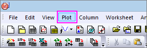
- Das Menüsymbol Zeichnen für jeden Diagrammtyp steht vor dem jeweiligen Diagrammnamen.
- Die Spalte Hinweise enthält grundlegende Informationen zu den Datenanforderungen. Weitere spezifische Datenanforderungen erhalten Sie, wenn Sie auf den Diagrammnamen neben dem Menüsymbol Zeichnen klicken.
Diagramme des Menüs Zeichnen nach Kategorie
|
Die Vorlagen des Menüs Zeichnen zeigen die grundlegenden Datenanforderungen an, wenn Sie die Maus über sie bewegen.
Wenn der Cursor über ein Zeichnungssymbol bewegt wird, wird durch Drücken auf F1 die Hilfedokumentation für diese Zeichnung geöffnet, einschließlich der Zeichnung, die über die Erweiterte Vorlage und Apps erstellt wurde.
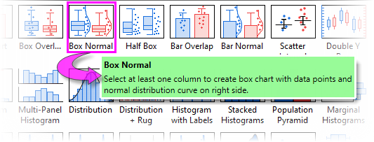
|
-
Einfache 2D
Diagramme, gelistet nach Typ
| Diagrammtypen |
Hinweise |
|
Punktdiagramm
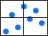 Punktdiagramm mit zentr. Ursprung
Säulen-Punktdiagramm
 Y-Fehlerbalken Y-Fehlerbalken
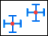 XY-Fehlerbalken
Fehlerband
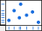 Punkt + Rug
 Blasendiagramm Blasendiagramm
Farbdiagramm
Blasen + farbig
|
- Öffnen Sie ein Arbeitsblatt.
- Wenn es eine verbundene X-Spalte gibt, stellt die X-Spalte die X-Werte bereit; ansonsten wird ein Abtastintervall von Y oder die Zeilennummer verwendet.
- Weitere spezifische Datenanforderungen können Sie nachlesen, indem Sie den Links in der Spalte Diagrammtypen folgen.
|
|
Linie
 Horizontale Stufen Horizontale Stufen
Vertikale Stufen
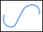 Spline
|
- Öffnen Sie ein Arbeitsblatt.
- Wählen Sie eine oder mehrere Y-Spalten oder mindestens einen Teilbereich aus einer Y-Spalte aus.
- Mehrere Y-Spalten werden im Layer gruppiert.
- Wenn es eine verbundene X-Spalte gibt, stellt die X-Spalte die X-Werte bereit; ansonsten wird ein Abtastintervall von Y oder die Zeilennummer verwendet.
- Weitere spezifische Datenanforderungen können Sie nachlesen, indem Sie den Links in der Spalte Diagrammtypen folgen.
|
|
 Punkt-Liniendiagramm Punkt-Liniendiagramm
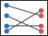 Linienkurvenschar
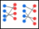 Vorher-und-Nachher-Diagramm
 2-Punkt-Segment 2-Punkt-Segment
 3-Punkt-Segment 3-Punkt-Segment
 Spline-Verbindung Spline-Verbindung
|
- Öffnen Sie ein Arbeitsblatt.
- Wählen Sie eine oder mehrere Y-Spalten oder mindestens einen Teilbereich aus einer Y-Spalte aus.
- Mehrere Y-Spalten werden im Diagrammlayer gruppiert (außer Kurvenschar).
- Wählen Sie für Kurvenschardiagramme 2 oder 3 Y-Spalten.
- Wenn es eine verbundene X-Spalte gibt, stellt die X-Spalte die X-Werte bereit; ansonsten wird ein Abtastintervall von Y oder die Zeilennummer verwendet.
- Weitere spezifische Datenanforderungen können Sie nachlesen, indem Sie den Links in der Spalte Diagrammtypen folgen.
|
|
 Lollipopdiagramm Lollipopdiagramm
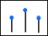 Vertikale Ankerlinie
|
- Öffnen Sie ein Arbeitsblatt.
- Wählen Sie für Balken-, Säulen- bzw. Säulendiagramme mit Beschriftung eine oder mehrere Y-Spalten (mehrere Y-Spalten werden im Layer gruppiert).
- Wählen Sie für Diagramme mit freien Balken/Säulen zwei Y-Spalten.
- Wählen Sie für gestapelte Diagramme und Lollipopdiagramme zwei oder mehr Y-Spalten.
- Wenn es eine verbundene X-Spalte gibt, stellt die X-Spalte die X-Werte bereit; ansonsten wird ein Abtastintervall von Y oder die Zeilennummer verwendet.
- Weitere spezifische Datenanforderungen können Sie nachlesen, indem Sie den Links in der Spalte Diagrammtypen folgen.
|
|
 Dichtepunkte Dichtepunkte
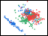 Farbpunkte
|
- Öffnen Sie ein Arbeitsblatt.
- Wählen Sie eine Y-Spalte (Dichtepunkte) oder zwei Y-Spalten (Farbpunkte) aus.
- Weitere Informationen können Sie nachlesen, indem Sie den Links in der Spalte Diagrammtypen folgen.
|
|
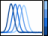 Farbkodierte Linienschar
 Linien mit Y-Versatz Linien mit Y-Versatz
Zeilenweise
|
- Öffnen Sie ein Arbeitsblatt.
- Wenn es eine verbundene X-Spalte gibt, stellt die X-Spalte die X-Werte bereit; ansonsten wird ein Abtastintervall von Y oder die Zeilennummer verwendet.
- Weitere spezifische Datenanforderungen können Sie nachlesen, indem Sie den Links in der Spalte Diagrammtypen folgen.
|
Balken, Kreis, Fläche
| Diagrammtypen |
Hinweise |
|
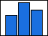 Säulen
 Säulen + Beschriftung Säulen + Beschriftung
 Balken Balken
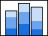 Gestapelte Säulen
 Gestapelte Balken Gestapelte Balken
 Gestapelte Säulen, 100% Gestapelte Säulen, 100%
 Gestapelte Balken, 100% Gestapelte Balken, 100%
 Frei bewegliche Säulen Frei bewegliche Säulen
 Frei bewegliche Balken Frei bewegliche Balken
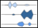 Kite-Diagramm
|
- Öffnen Sie ein Arbeitsblatt.
- Wählen Sie für Balken-, Säulen- bzw. Säulendiagramme mit Beschriftung eine oder mehrere Y-Spalten (mehrere Y-Spalten werden im Layer gruppiert).
- Wählen Sie für Diagramme mit freien Balken/Säulen zwei Y-Spalten.
- Wählen Sie für gestapelte Diagramme und Lollipopdiagramme zwei oder mehr Y-Spalten.
- Wenn es eine verbundene X-Spalte gibt, stellt die X-Spalte die X-Werte bereit; ansonsten wird ein Abtastintervall von Y oder die Zeilennummer verwendet.
- Weitere spezifische Datenanforderungen können Sie nachlesen, indem Sie den Links in der Spalte Diagrammtypen folgen.
|
|
 Farbiges 3D-Kreisdiagramm Farbiges 3D-Kreisdiagramm
 Farbiges 2D-Kreisdiagramm Farbiges 2D-Kreisdiagramm
Ringdiagramm
 Kreis von Kreis Kreis von Kreis
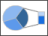 Balken von Kreis
Ring von Kreis
Ring mit Segmenten gesamt
Kreis mit unterschiedlichem Radius
 Ring mit unterschiedlichem Radius Ring mit unterschiedlichem Radius
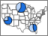 Karte mit Kreisdiagrammen
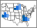 Karte mit Balkendiagrammen
|
- Öffnen Sie ein Arbeitsblatt.
- Wählen Sie genau eine Y-Spalte oder einen Bereich einer Y-Spalte aus.
- Wenn es eine verbundene X-Spalte gibt, werden die X-Daten in der Diagrammlegende verwendet; ansonsten wird die Zeilennummer verwendet.
- Weitere spezifische Datenanforderungen können Sie nachlesen, indem Sie den Links in der Spalte Diagrammtypen folgen.
|
|
 Fläche Fläche
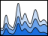 Gestapelte Fläche
 Gestapelte Fläche, 100% Gestapelte Fläche, 100%
Füllfläche
 2 Füllfarben 2 Füllfarben
|
- Öffnen Sie ein Arbeitsblatt.
- Wenn es eine verbundene X-Spalte gibt, stellt die X-Spalte die X-Werte bereit; ansonsten wird ein Abtastintervall von Y oder die Zeilennummer verwendet.
- Weitere spezifische Datenanforderungen können Sie nachlesen, indem Sie den Links in der Spalte Diagrammtypen folgen.
|
Mehrere Felder/Achsen
| Diagrammtypen |
Hinweise |
|
 Doppeltes Y Doppeltes Y
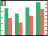 Säulen mit doppeltem Y
 Säulen/Linien-Symbol mit doppeltem Y Säulen/Linien-Symbol mit doppeltem Y
|
- Öffnen Sie ein Arbeitsblatt.
- Wählen Sie zwei Y-Spalten aus.
- Wenn es eine verbundene X-Spalte gibt, stellt die X-Spalte die X-Werte bereit; ansonsten wird ein Abtastintervall von Y oder die Zeilennummer verwendet.
- Weitere spezifische Datenanforderungen können Sie nachlesen, indem Sie den Links in der Spalte Diagrammtypen folgen.
|
|
 2Y, Y-Y 2Y, Y-Y
Säulen mit 2Y
Säulen/Linien-Symbol mit 2Y
|
- Öffnen Sie ein Arbeitsblatt.
- Wählen Sie zwei Y-Spalten aus.
- Wenn es eine verbundene X-Spalte gibt, stellt die X-Spalte die X-Werte bereit; ansonsten wird ein Abtastintervall von Y oder die Zeilennummer verwendet.
- Weitere spezifische Datenanforderungen können Sie nachlesen, indem Sie den Links in der Spalte Diagrammtypen folgen.
|
|
 3Y, Y-YY 3Y, Y-YY
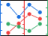 3Y, Y-Y-Y
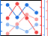 4Y, Y-YYY
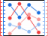 4Y, YY-YY
 Mehrere Y-Achsen Mehrere Y-Achsen
|
- Öffnen Sie ein Arbeitsblatt.
- Wählen Sie für jede Y-Achse eine Y-Spalte aus.
- Mehrere Y-Achsen öffnen einen interaktiven Dialog. Wählen Sie den Diagrammtyp, die Anzahl der Achsen, die Zeichnungen pro Layer, die zur Zeichnung passende Achsenfarbe etc.
- Weitere spezifische Datenanforderungen können Sie nachlesen, indem Sie den Links in der Spalte Diagrammtypen folgen.
|
|
 2-fach Vertikal 2-fach Vertikal
 2-fach Horizontal 2-fach Horizontal
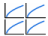 4-fach
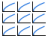 9-fach
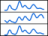 Gestapelt
 Mehrfach nach Beschriftung Mehrfach nach Beschriftung
|
- Öffnen Sie ein Arbeitsblatt.
- Wählen Sie pro Feld eine Y-Spalte (oder Bereich).
- Wenn es eine verbundene X-Spalte gibt, stellt die X-Spalte die X-Werte bereit; ansonsten wird ein Abtastintervall von Y oder die Zeilennummer verwendet.
- Weitere spezifische Datenanforderungen können Sie nachlesen, indem Sie den Links in der Spalte Diagrammtypen folgen.
|
|
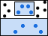 Zoom
|
- Öffnen Sie ein Arbeitsblatt.
- Wählen Sie mindestens eine Y-Spalte oder einen Bereich aus mindestens einer Y-Spalte aus.
- Wenn es eine verbundene X-Spalte gibt, stellt die X-Spalte die X-Werte bereit; ansonsten wird ein Abtastintervall von Y oder die Zeilennummer verwendet.
- Weitere spezifische Datenanforderungen können Sie nachlesen, indem Sie dem Link in der Spalte Diagrammtypen folgen.
|
1 Layer, 2 Y-Achsen
Es war lange möglich, in Origin Diagramme mit "doppeltem Y" zu erstellen. Zuvor bedeutete "2 Y-Achsen" "2 Layer". Seit Origin 2023 wurde die Unterstützung für einen neuen Zeichenmechanismus "1 Layer, 2 Y-Achsen" eingeführt. Der neue Mechanismus hat allgemeine Anwendungen für 2D-Punkt-, -Linien-, -Punkt-Linien- (inkl. Variationen wie das "Vorher-Nachher"-Diagramm), Säulen-, Box-, Flächendiagramme und Histogramme. Mit den neuen Bedienelementen der Bedienoberfläche kann der Anwender nur mittels der einfachen Diagrammtypvorlagen so ein Diagramm erstellen.
Seit Origin 2023 hat die Kategorie Mehrere Felder/Achsen (Zeichnen: Mehrere Felder/Achsen) zwei Reihen mit Vorlagen für "Doppelte Y", wobei die neuen Vorlagen mit einzelnen Layer oben und die älteren Vorlagen mit zwei Layern unten aufgeführt sind.
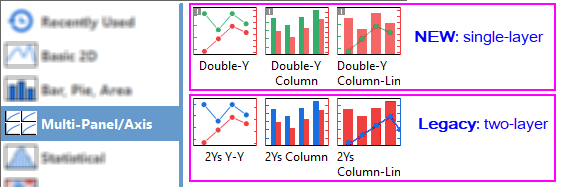
Die neuen und die bisherigen Vorlagen erzeugen das gleiche Diagramm. Der einzige Unterschied besteht darin, dass die bisherige Vorlage zwei Layer erzeugt, während die neue Vorlage nur eine erzeugt. Die Zeichenprozedur ist die gleiche für beide:
- Im Arbeitsblatt wählen Sie 2 Spalten mit "Y"-Daten.
- Klicken Sie auf Zeichnen: Mehrere Felder/Achsen und wählen Sie die gewünschte Vorlage

Weitere hinzugefügte Bedienelemente, die diesen neuen Zeichnungsmechanismus unterstützen, sind "1 Layer, 2 Y-Achse" :
- Die Registerkarte Gruppe im Dialog Details Zeichnung verfügt über die Option Teilgruppierung = Nach Achse. In obigen Grafik haben wir diese Einstellung nicht verwendet. Stattdessen wählten wir die Verwendung einer einzelnen Gruppe und nutzten die Standardinkrementlisten für Linienfarbe und Symbolform der Vorlage für Punkt-Liniendiagramme. Wir könnten jedoch auch genauso die Zeichnungen der linken und rechten Y-Achse in zwei separate Gruppen teilen und dann für jede Gruppe das jeweilige Verhalten auf der Registerkarte Gruppe (Details Zeichnung) festlegen.
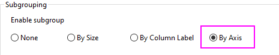
- Die zuvor erwähnten Diagrammtypen verfügen nun über eine Registerkarte Anzeige auf Zeichnungsebene des Dialogs Details Zeichnung. Verwenden Sie die Optionen Daten zeichnen auf der Linken Y-Achse oder Rechten Y-Achse.
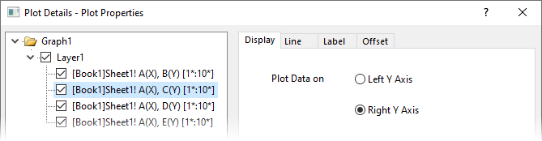
- Der Dialog Achsen hat jetzt das Kontrollkästchen Jede Achse unabhängig neu skalieren, das für ein Diagramm mit doppeltem Y aktiviert sein sollte. (Sollten Ihre zwei vertikalen Achsen nicht unabhängig von einander skaliert werden können, prüfen Sie diese Einstellung).
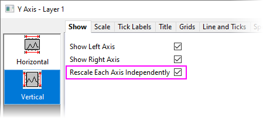
Statistisch
Diagramme, gelistet nach Typ
| Diagrammtypen |
Hinweise |
|
 Boxdiagramm Boxdiagramm
 Intervalldiagramm Intervalldiagramm
 Balkendiagramm Balkendiagramm
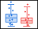 Boxenüberschneidung
 Box Normal Box Normal
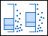 Halbe Box
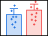 Balkenüberschneidung
Balken Normal
Punkt Intervall
 Marginale Boxdiagramme Marginale Boxdiagramme
Beeswarm-Diagramm
|
- Öffnen Sie ein Arbeitsblatt.
- Wählen Sie mindestens eine Y-Spalte oder einen Bereich aus mindestens einer Y-Spalte aus.
- Weitere spezifische Datenanforderungen können Sie nachlesen, indem Sie dem Link in der Spalte Diagrammtypen folgen.
|
|
 Histogramm Histogramm
 Histogramm + Rug Histogramm + Rug
Histogramm + Wahrscheinlichkeiten
 Histogramm mit mehreren Feldern Histogramm mit mehreren Feldern
Verteilung
 Verteilung + Rug Verteilung + Rug
Histogramm mit Beschriftungen
 Gestapelte Histogramme Gestapelte Histogramme
 Bevölkerungspyramide Bevölkerungspyramide
 Randverteilungshistogramme Randverteilungshistogramme
Randdiagramme (Gruppierte Randverteilungshistogramme)
|
- Öffnen Sie ein Arbeitsblatt.
- Wählen Sie mindestens eine Y-Spalte oder einen Bereich aus mindestens einer Y-Spalte aus.
- Weitere spezifische Datenanforderungen können Sie nachlesen, indem Sie den Links in der Spalte Diagrammtypen folgen.
|
|
Matrix von Streudiagrammen
|
- Öffnen Sie ein Arbeitsblatt.
- Wählen Sie zwei Y-Datenspalten oder einen Bereich aus zwei Y-Spalten aus.
- Weitere spezifische Datenanforderungen können Sie nachlesen, indem Sie dem Link in der Spalte Diagrammtypen folgen.
|
|
 Violindiagramm Violindiagramm
Violine mit Box
Violine mit Punkt
Violine mit Quartil
 Violine mit Streifen Violine mit Streifen
Aufgeteilte Violine
Halbe Violine Ridgeline-Diagramm
|
- Öffnen Sie ein Arbeitsblatt.
- Wählen Sie mindestens eine Y-Spalte aus (oder einen Bereich aus mindestens einer Y-Spalte).
- Die aufgetilte Violine erfordert genau 2 Datenspalten plus eine dritte Gruppierungsspalte.
- Datenanforderungen und weitere Informationen zu Zeichnungsvariationen können Sie unter Violindiagramm nachlesen.
Datenanforderungen und weitere Informationen zu Ridgeline-Diagrammen finden Sie, wenn Sie dem Link in der Spalte Diagrammtypen folgen.
|
|
 Pareto-Diagramm - Eingeteilte Daten Pareto-Diagramm - Eingeteilte Daten
Pareto-Diagramm - Rohdaten
|
- Öffnen Sie ein Arbeitsblatt.
- Wählen Sie eine Y-Spalte oder einen Bereich einer Y-Spalte (Roh) oder eine Y-Spalte der Ergebnisse für Eingeteilt aus.
- Weitere spezifische Datenanforderungen können Sie nachlesen, indem Sie dem Link in der Spalte Diagrammtypen folgen.
|
|
QC (X-quer-R)-Diagramm
|
- Öffnen Sie ein Arbeitsblatt.
- Wählen Sie mindestens eine Y-Spalte oder einen Bereich aus mindestens einer Y-Spalte aus.
- Weitere spezifische Datenanforderungen können Sie nachlesen, indem Sie dem Link in der Spalte Diagrammtypen folgen.
|
|
Brückendiagramm
 Gestapeltes Brückendiagramm Gestapeltes Brückendiagramm
Gestapeltes Brückendiagramm, Summe
 Brückendiagramm, Horizontal Brückendiagramm, Horizontal
Boxdiagramm mit doppelter Y-Achse
|
- Öffnen Sie ein Arbeitsblatt.
- Markieren Sie eine oder mehrere Y-Spalten (oder einen Bereich aus einer oder mehreren Y-Spalten). Wenn es eine X-Spalte links von der/n Y-Spalte(n) gibt, wird diese X-Spalte als kategoriale Daten verwendet; ansonsten werden die Zeilenindizes des Arbeitsblatts verwendet.
- Origin-Brückendiagramme sind Varianten eines Basisdiagrammtyps. Weitere Informationen finden Sie unter Brückendiagramme.
|
|
 Wahrscheinlichkeitsdiagramm] Wahrscheinlichkeitsdiagramm]
Q-Q-Diagramm
|
- Öffnen Sie ein Arbeitsblatt.
- Wählen Sie eine Y-Spalte oder einen Bereich einer Y-Spalte aus.
- Weitere spezifische Datenanforderungen können Sie nachlesen, indem Sie dem Link in der Spalte Diagrammtypen folgen.
|
|
Bland-Altman-Diagramm
|
- Öffnen Sie ein Arbeitsblatt.
- Wählen Sie zwei Methodenspalten und eine Subjektspalte (optional).
|
|
 Korrelationsdiagramm Korrelationsdiagramm
|
- Das Korrelationsdiagramm ist eine App. Um sie zu nutzen, stellen Sie bitte sicher, dass die App installiert ist.
- Öffnen Sie ein Arbeitsblatt.
- Die Daten können im Dialog geprüft werden.
|
|
 Paired Comparison Plot Paired Comparison Plot
|
- Das gepaarte Vergleichsdiagramm ist eine App. Um sie zu nutzen, stellen Sie bitte sicher, dass die App installiert ist.
- Öffnen Sie ein Arbeitsblatt.
- Wählen Sie eine Datenspalte und die Gruppenspalten im Dialog.
|
Kontur
Diagramme, gelistet nach Typ
| Diagrammtypen |
Hinweise |
|
 Kontur - Farbabbildung Kontur - Farbabbildung
 Kontur - SW-Linien + Beschriftungen Kontur - SW-Linien + Beschriftungen
Graustufenabbildung
Kontur - Kategorial Z
|
- Kontur mit Farbfüllung, Linien und Beschriftung SW, Abbildung Graustufen, Konturprofile: XYZ, Virtuelle Matrix, Matrix.
- Kontur - Kategorial Z: XYZ, Virtuelle Matrix.
- Weitere spezifische Datenanforderungen können Sie nachlesen, indem Sie den Links in der Spalte Diagrammtypen folgen.
|
|
Heatmap
 Heatmap mit Beschriftungen Heatmap mit Beschriftungen
 Heatmap aufteilen Heatmap aufteilen
|
- Heatmap und Heatmap mit Beschriftungen beginnen mit einem Arbeitsblatt (XY, XYZ), einer Virtuellen Matrix oder einer Matrix.
- Heatmap aufteilen basiert auf einem Arbeitsblatt.
- Weitere spezifische Datenanforderungen können Sie nachlesen, indem Sie den Links in der Spalte Diagrammtypen folgen.
|
|
Konturprofile
 Bildprofile Bildprofile
|
- Fangen Sie mit einem Arbeitsblatt, einer Virtuellen Matrix oder einer Matrix (nur Bildprofile, Matrix) an.
- Weitere spezifische Datenanforderungen können Sie nachlesen, indem Sie den Links in der Spalte Diagrammtypen folgen.
|
|
Polar Kontur Theta(X), r(Y)
 Polar Kontur r(X), Theta(Y) Polar Kontur r(X), Theta(Y)
|
|
|
Ternär Kontur
|
- Öffnen Sie ein Arbeitsblatt.
- Die Spalten sollten als XYZZ zugewiesen sein.
- Weitere spezifische Datenanforderungen können Sie nachlesen, indem Sie dem Link in der Spalte Diagrammtypen folgen.
|
|
 2D-Kernel-Dichte 2D-Kernel-Dichte
|
- Öffnen Sie ein Arbeitsblatt.
- Wählen Sie mindestens eine Y-Spalte oder einen Bereich aus mindestens einer Y-Spalte aus.
- Weitere spezifische Datenanforderungen können Sie nachlesen, indem Sie dem Link in der Spalte Diagrammtypen folgen.
|
|
Bilddiagramm
|
- Öffnen Sie ein Matrix.
- Die Z-Werte sind aus einem importierten Rasterbild.
|
Spezialisiert
Diagramme, gelistet nach Typ
| Diagrammtypen |
Hinweise |
|
Vektor XYWG
Vektor XYXY
|
- Öffnen Sie ein Arbeitsblatt.
- Wählen Sie für ein XYWG-Vektordiagramm drei Y-Spalten (oder einen Bereich aus drei Datenspalten) aus.
- Wählen Sie für ein XYXY-Vektordiagramm zwei X-Spalten und zwei Y-Spalten (oder einen Bereich aus zwei X- und zwei Y-Spalten) aus.
- Weitere spezifische Datenanforderungen können Sie nachlesen, indem Sie den Links in der Spalte Diagrammtypen folgen.
|
|
Feldlinien-Vektordiagramm
|
- Beginnen Sie mit einem Matrixblatt mit zwei Matrixobjekten.
- Die zwei Matrixobjekte sind Ableitungen der gezeichneten Kurve in X- bzw. Y-Richtung.
|
|
Ternär
Ternär, Linie+Symbol
 Ternär, Linie Ternär, Linie
Rechtwinklig Ternär
Ternärer Vektor
 Piper Piper
 Stiff Stiff
Stiff Map
 Durov Durov
|
- Öffnen Sie ein Arbeitsblatt.
- Weitere spezifische Datenanforderungen können Sie nachlesen, indem Sie den Links in der Spalte Diagrammtypen folgen.
|
|
Radar
Linienfüllung
 Linie Linie
 Symbol Symbol
|
- Öffnen Sie ein Arbeitsblatt.
- Wählen Sie mindestens eine Y-Spalte aus (oder einen Bereich aus mindestens einer Y-Spalte). Die X-Spalte wird als Titel der Radialachse um das Diagramm herum angezeigt. Wenn es eine verbundene X-Spalte gibt, stellt die X-Spalte die X-Werte bereit; ansonsten wird ein Abtastintervall von Y oder die Zeilennummer verwendet.
- Radardiagramme werden auch als "Netzdiagramme" bezeichnet.
- Weitere Informationen finden Sie unter Radardiagramm (Netzdiagramm).
|
|
Polar Theta(X) r(Y)
 Polar r(X) Theta(Y) Polar r(X) Theta(Y)
 Balken Theta, r Balken Theta, r
 Balken r, Theta Balken r, Theta
Line + Symbol theta, r
 Linie + Symbol r, Theta Linie + Symbol r, Theta
Symbol Theta, r
 Symbol r, Theta Symbol r, Theta
Windrose - Eingeteilte Daten
Windrose - Rohdaten
|
- Öffnen Sie ein Arbeitsblatt.
- Markieren Sie eine oder mehrere Y-Spalten oder einen Bereich aus einer oder mehreren Y-Spalten. Wenn es eine verbundene X-Spalte gibt, stellt die X-Spalte die X-Werte bereit; ansonsten wird ein Abtastintervall von Y oder die Zeilennummer verwendet.
- Genaueres zu Datenanforderungen und weiteren Informationen finden Sie unter Polardiagramm.
|
|
 Gestapeltes Radialdiagramm Gestapeltes Radialdiagramm
 Radiales Balkendiagramm Radiales Balkendiagramm
Radiales gestapeltes Balkendiagramm
|
|
|
Polares Vektordiagramm θr θr]
 Kompassdiagramm Kompassdiagramm
|
- Öffnen Sie ein Arbeitsblatt.
- Wählen Sie beim Kompassdiagramm mindestens eine Y-Datenspalte (oder einen Bereich aus mindestens einer Spalte) aus. Wenn es eine verbundene X-Spalte gibt, stellt die X-Spalte die X-Werte bereit; ansonsten wird ein Abtastintervall von Y oder die Zeilennummer verwendet.
- Wählen Sie beim polaren Vektordiagramm θr θr zwei Paare XY-Spalten in der Ordnung θr θr aus.
|
|
 Smith-Diagramm Smith-Diagramm
|
- Öffnen Sie ein Arbeitsblatt.
- Wählen Sie mindestens eine Y-Datenspalte (oder einen Bereich aus mindestens einer Spalte) aus. Wenn es eine verbundene X-Spalte gibt, stellt die X-Spalte die X-Werte bereit; ansonsten wird ein Abtastintervall von Y oder die Zeilennummer verwendet.
- Weitere Informationen können Sie nachlesen, indem Sie dem Link in der Spalte Diagrammtypen folgen.
|
|
HLC-Diagramme
Japanische Candlesticks
 OHLC-Balken OHLC-Balken
OHLC-Volumen
Linie
|
- Öffnen Sie ein Arbeitsblatt.
- Weitere spezifische Datenanforderungen können Sie nachlesen, indem Sie den Links in der Spalte Diagrammtypen folgen.
|
|
 Bullet-Diagramm Bullet-Diagramm
Vertikales Bullet-Diagramm
 Normalisiertes Bullet-Diagramm Normalisiertes Bullet-Diagramm
|
- Öffnen Sie ein Arbeitsblatt.
- Wählen Sie eine X-Spalte und mindestens zwei Y-Spalten aus.
- Weitere Informationen finden Sie unter Bullet-Diagramm.
|
Kategorial
Diagramme, gelistet nach Typ
| Diagrammtypen |
Hinweise |
|
 Gruppierte Punktdiagramme, Index Gruppierte Punktdiagramme, Index
|
- Öffnen Sie ein Arbeitsblatt.
- Wählen Sie mindestens eine Y-Spalte als Eingabedaten aus.
- Eine oder mehrere Spalte(n) der kategorialen Daten stellen die Gruppierungsinformationen bereit.
- Weitere Informationen können Sie nachlesen, indem Sie dem Link in der Spalte Diagrammtypen folgen.
|
|
Farbdiagramm
Blasen + farbig
|
- Öffnen Sie ein Arbeitsblatt.
- Wenn es eine verbundene X-Spalte gibt, stellt die X-Spalte die X-Werte bereit; ansonsten wird ein Abtastintervall von Y oder die Zeilennummer verwendet.
- Weitere spezifische Datenanforderungen können Sie nachlesen, indem Sie den Links in der Spalte Diagrammtypen folgen.
|
|
Gruppierte Säulen - Indexdaten
Gruppierte frei bewegliche Balken
|
- Öffnen Sie ein Arbeitsblatt.
- Wählen Sie mindestens eine Y-Spalte (Gruppierte Säulen) oder zwei Y-Spalten (Gruppierte frei bewegliche Balken) aus.
- Wenn es eine verbundene X-Spalte gibt, stellt die X-Spalte die X-Werte bereit; ansonsten wird ein Abtastintervall von Y oder die Zeilennummer verwendet.
- Für Gruppierte Säulen - Indexdaten liefert eine zusätzliche Spalte Gruppierungsinformationen.
- Für Gruppierte frei bewegliche Balkendiagramme gibt es eine Teilgruppierung nach Größe (d. h. Anzahl der Spalten) oder nach Spaltenbeschriftung.
|
|
 Gruppierte Boxdiagramme, Index Gruppierte Boxdiagramme, Index
 Gruppierte Boxdiagramme, Roh Gruppierte Boxdiagramme, Roh
Gruppierte Säulen-Punktdiagramme, Index
 Gruppiertes Intervalldiagramm, Index Gruppiertes Intervalldiagramm, Index
Gruppierte Mittelwertbalken, Index
 Gruppiertes Violindiagramm, Index Gruppiertes Violindiagramm, Index
 Gruppiertes halbes Violindiagramm, Index Gruppiertes halbes Violindiagramm, Index
Gruppiertes halbes Boxdiagramm, Index
|
- Öffnen Sie ein Arbeitsblatt.
- Wählen Sie mindestens eine Y-Spalte aus (oder einen Bereich aus mindestens einer Y-Spalte), plus eine zweite Säule mit Gruppierungsinformationen. Wenn es eine verbundene X-Spalte gibt, stellt die X-Spalte die X-Werte bereit; ansonsten wird ein Abtastintervall von Y oder die Zeilennummer verwendet.
- Zeichnungen der Indexdaten sind alle Stilvariationen des Gruppierten Boxdiagramms.
- Weitere Informationen erhalten Sie über die links in der Spalte Diagrammtypen.
|
|
 Trellis-Diagramm Trellis-Diagramm
|
- Öffnen Sie ein Arbeitsblatt.
- Wählen Sie mindestens eine Y-Spalte als Eingabedaten aus. Optional können Sie eine zusätzliche Y-Fehlerspalte für jede Y-Spalte haben. Andere Spalte(n) enthalten im Allgemeinen die Gruppeninformationen.
- Weitere Informationen können Sie nachlesen, indem Sie dem Link in der Spalte Diagrammtypen folgen.
|
|
Trellisdiagramm mit doppeltem Y
|
- Öffnen Sie ein Arbeitsblatt.
- Wählen Sie zwei Y-Spalten als Eingabedaten aus. Optional können Sie eine zusätzliche Y-Fehlerspalte für jede Y-Spalte haben. Andere Spalte(n) enthalten im Allgemeinen die Gruppeninformationen.
- Weitere Informationen können Sie nachlesen, indem Sie dem Link in der Spalte Diagrammtypen folgen.
|
|
 Clusterdiagramm Clusterdiagramm
|
- Öffnen Sie ein Arbeitsblatt.
- Sie benötigen zwei Y-Spalten, von denen eine Gruppierungsinformationen enthalten sollte.
- Gruppierungsspalten können verwendet werden, um separate Felder in horizontaler und/oder vertikaler Richtung zu erstellen und/oder gezeichnete Punkte zu modifizieren (Farbe, Punktgröße, Punktform etc.).
|
|
Paralleldiagramm
 Parallelsätze Parallelsätze
Parallelindex
|
- Öffnen Sie ein Arbeitsblatt.
- Wählen Sie mindestens eine (idealerweise zwei oder mehr) Spalte(n) oder einen Bereich aus einer oder mehreren Spalten aus. Die Spaltenzuweisung ist unwichtig. Jede Spalte wird als Daten für eine einzelne Variable behandelt.
- Variablen können numerisch sein (Paralleldiagramm oder Parallelindex) oder sie können kategorial sein (Parallelsätze).
- Parallelsatzdiagramme haben eine "Krümmungs"option, die zuweilen in Diagrammen zu beobachten ist, die als "Alluvialdiagramme" bezeichnet werden (siehe nächsten Abschnitt).
- Weitere Informationen können Sie nachlesen, indem Sie den Links in der Spalte Diagrammtypen folgen.
|
|
Sankey-Diagramme
 Alluvialdiagramme Alluvialdiagramme
|
- Öffnen Sie ein Arbeitsblatt.
- Wählen Sie für Sankey-Diagramme genau zwei Spalten kategoriale Daten und eine Spalte numerische Daten aus. Die Spaltenzuordnung wird ignoriert.
- Wählen Sie für Alluvialdiagramme zwei oder mehrere Spalten kategoriale Daten aus. Die Spaltenzuordnung wird ignoriert.
- Weitere Informationen können Sie nachlesen, indem Sie den Links in der Spalte Diagrammtypen folgen.
|
|
Sehnendiagramm
Sehnendiagramm mit Verhältnislayout
|
- Öffnen Sie ein Arbeitsblatt oder eine virtuelle Matrix.
- Wählen Sie mindestens drei Wertespalten (Arbeitsblatt) oder einen Block von Werten (virtuelle Matrix) aus mindestens drei Spalten aus.
- Die erste Spalte wird als X behandelt und sollte monotonisch sein.
- Weitere Informationen finden Sie unter Sehnendiagramm und Sehnendiagramm mit Verhältnislayout.
|
|
Band
100-%-Band
|
- Öffnen Sie ein Arbeitsblatt.
- Wählen Sie mindestens zwei Y-Spalten aus (oder einen Bereich aus mindestens zwei Y-Spalten).
- Wenn es eine verbundene X-Spalte gibt, stellt die X-Spalte die X-Werte bereit; ansonsten wird ein Abtastintervall der Y-Spalte oder Zeilennummer verwendet.
|
|
 Netzwerk Netzwerk
|
- Öffnen Sie ein Arbeitsblatt.
- Das Diagramm erfordert eine von drei Datenanordnungen: Adjazenzmatrix, Inzidenzmatrix oder Randliste.
- Ein Dialog wird verwendet, um Eingabe- und Analyseparameter festzulegen.
- Unabhängig von der Datenanordung wird ein Zwischenblatt erstellt, um Knoten- und Verknüpfungsinformationen tabellarisch darzustellen.
|
|
 Sunburst-Diagramm Sunburst-Diagramm
 Kreispackungsdiagramm Kreispackungsdiagramm
|
- Öffnen Sie ein Arbeitsblatt.
- Wählen Sie mehrere kategoriale X-Spalten und eine Y-Spalte aus.
|
3D
Diagramme, gelistet nach Typ
| Diagrammtypen |
Hinweise |
|
3D-Punkt
 3D-Punkt + Z-Fehlerbalken 3D-Punkt + Z-Fehlerbalken
 3D-Linie 3D-Linie
3D-Ankerlinien
|
- Datenanforderungen variieren nach Diagrammtyp. Siehe Links in der Spalte Diagrammtypen.
|
|
 3D-Vektor XYZ XYZ 3D-Vektor XYZ XYZ
3D-Vektor XYZ dXdYdZ
|
- Öffnen Sie ein Arbeitsblatt.
- Markieren Sie sechs Arbeitsblattspalten, zugewiesen als XYZ XYZ.
- Weitere Informationen können Sie nachlesen, indem Sie den Links in der Spalte Diagrammtypen folgen.
|
|
3D-Bänder
|
- Öffnen Sie ein Arbeitsblatt.
- Wählen Sie mindestens eine Y-Spalte aus (oder einen Bereich aus mindestens einer Y-Spalte). Idealerweise wählen Sie mindestens zwei Y-Spalten aus (oder einen Bereich aus mindestens zwei Y-Spalten). Wenn es eine verbundene X-Spalte gibt, stellt die X-Spalte die X-Werte bereit; ansonsten wird ein Abtastintervall von Y oder die Zeilennummer verwendet.
- Weitere Informationen können Sie nachlesen, indem Sie dem Link in der Spalte Diagrammtypen folgen.
|
|
 3D-Wände 3D-Wände
 Gestapelte 3D-Wände Gestapelte 3D-Wände
Gestapelte 3D-Wände, 100%
|
- Öffnen Sie ein Arbeitsblatt.
- Wählen Sie mindestens eine Y-Spalte aus (oder einen Bereich aus mindestens einer Y-Spalte). Idealerweise wählen Sie mindestens zwei Y-Spalten aus (oder einen Bereich aus mindestens zwei Y-Spalten). Wenn es eine verbundene X-Spalte gibt, stellt die X-Spalte die X-Werte bereit; ansonsten wird ein Abtastintervall von Y oder die Zeilennummer verwendet.
- Weitere Informationen können Sie nachlesen, indem Sie dem Link in der Spalte Diagrammtypen folgen.
|
|
 Wasserfall Wasserfall
Wasserfall Y: Farbabbildung
 Wasserfall Z: Farbabbildung Wasserfall Z: Farbabbildung
 3D-Wasserfall 3D-Wasserfall
 3D-Wasserfall Y: Farbabbildung 3D-Wasserfall Y: Farbabbildung
 3D-Wasserfall Z: Farbabbildung 3D-Wasserfall Z: Farbabbildung
|
- Öffnen Sie ein Arbeitsblatt.
- Wählen Sie mindestens eine Y-Spalte aus (oder einen Bereich aus mindestens einer Y-Spalte). Idealerweise wählen Sie mindestens zwei Y-Spalten aus (oder einen Bereich aus mindestens zwei Y-Spalten). Wenn es eine verbundene X-Spalte gibt, stellt die X-Spalte die X-Werte bereit; ansonsten wird ein Abtastintervall von Y oder die Zeilennummer verwendet.
- Weitere Informationen können Sie nachlesen, indem Sie den Links in der Spalte Diagrammtypen folgen.
|
Wasserfall, Wasserfall Y: Farbabbildung und Wasserfall Z: Farbabbildung sind nur über die Symbolleiste 2D-Grafiken verfügbar.
|
|
|
 3D-Oberfläche mit Farbfüllung 3D-Oberfläche mit Farbfüllung
3D X konstant mit Basis
 3D Y konstant mit Basis 3D Y konstant mit Basis
3D-Obrfläche mit Farbabbildung
 3D-Oberfläche mit Farbabbildung und Projektion 3D-Oberfläche mit Farbabbildung und Projektion
3D-Drahtgitter
 3D-Drahtoberfläche 3D-Drahtoberfläche
|
- Fangen Sie mit einem Arbeitsblatt oder einer Matrix an.
- Weitere spezifische Datenanforderungen können Sie nachlesen, indem Sie den Links in der Spalte Diagrammtypen folgen.
|
|
3D-Oberfläche mit Farbfüllung und Fehlerbalken
 3D-Oberfläche mit Farbabbildung und Fehlerbalken 3D-Oberfläche mit Farbabbildung und Fehlerbalken
Mehrere Oberflächen mit Farbfüllung
Mehrere Oberflächen mit Farbabbildung
|
- Öffnen Sie ein Matrix.
- Weitere spezifische Datenanforderungen können Sie nachlesen, indem Sie den Links in der Spalte Diagrammtypen folgen.
|
|
Gestapelte 3D-Oberflächen
 Gestapelte 3D-Heatmaps Gestapelte 3D-Heatmaps
|
- Fangen Sie mit einem Arbeitsblatt oder einer Matrix an.
- Weitere spezifische Datenanforderungen können Sie nachlesen, indem Sie den Links in der Spalte Diagrammtypen folgen.
|
|
 3D-Balken 3D-Balken
Gestapelte 3D-Balken
Gestapelte 3D-Balken, 100%
|
- Fangen Sie mit einem Arbeitsblatt (XYZ) oder einer Virtuellen Matrix oder einer Matrix der Z-Werte an.
- Weitere spezifische Datenanforderungen können Sie nachlesen, indem Sie den Links in der Spalte Diagrammtypen folgen.
|
|
XYY 3D-Balken
 Seitlich nebeneinander angeordnete 3D-Balken, XYY Seitlich nebeneinander angeordnete 3D-Balken, XYY
Gestapelte 3D-XYY-Balken
Gestapelte 3D-XYY-Balken, 100%
|
- Öffnen Sie ein Arbeitsblatt.
- Wählen Sie mindestens eine Y-Spalte aus (oder einen Bereich aus mindestens einer Y-Spalte). Idealerweise wählen Sie mindestens zwei Y-Spalten aus (oder einen Bereich aus mindestens zwei Y-Spalten). Wenn es eine verbundene X-Spalte gibt, stellt die X-Spalte die X-Werte bereit; ansonsten wird ein Abtastintervall von Y oder die Zeilennummer verwendet.
- Weitere Informationen können Sie nachlesen, indem Sie den Links in der Spalte Diagrammtypen folgen.
|
|
Ternäre 3D-Oberfläche mit Farbabbildung
 3D Ternär Symbol 3D Ternär Symbol
|
- Öffnen Sie ein Arbeitsblatt.
- Wählen Sie zwei Z-Spalten (XYZZ) oder einen Datenbereich aus zwei Z-Spalten (Z-Spalten können Mehrfache von 2 sein).
- Weitere Informationen können Sie nachlesen, indem Sie den Links in der Spalte Diagrammtypen folgen.
|
|
 3D Tetraedrisch 3D Tetraedrisch
|
- Öffnen Sie ein Arbeitsblatt.
- Wählen Sie zwei Z-Spalten (XYZZ) oder einen Datenbereich aus zwei Z-Spalten (Z-Spalten können Mehrfache von 2 sein).
- Weitere Informationen können Sie nachlesen, indem Sie den Links in der Spalte Diagrammtypen folgen.
|
|
Parametrische Oberfläche
|
- Öffnen Sie ein Matrix.
- Die Matrix sollte mindestens 3 Objekte in demselben Matrixblatt haben.
- Weitere Informationen können Sie nachlesen, indem Sie den Links in der Spalte Diagrammtypen folgen.
|
Eine Übersicht über Origins 3D-Diagrammtypen und ihre Anforderungen an die Quelldaten finden Sie unter folgenden Themen:
-
Browserdiagramm
Diagramme, Browser Diagramme, Gelistet nach Typ

Browserdiagramme sind nützlich für das selektive Zeichnen von Daten aus Arbeitsblättern, die viele Spalten (und Zeilen) in einem einzelnen Diagrammlayer enthalten:
- Wählen Sie eine einzelne Zeichnung oder jede N-te Spalte zum Zeichnen aus.
- Sie können die Spaltenauswahl ganz einfach ändern.
- Strecken Sie das Fenster in jede Richtung, um die Ansicht zu verbessern.
- Legen Sie die automatische Neuskalierung und/oder den allgemeinen Anzeigebereich für alle Zeichnungen fest.
- Dies funktioniert auch mit anderen Origin-Hilfsmitteln, einschließlich Minitools.
- Zeichnungen können mit dem Dialog Details Zeichnung weiter benutzerdefiniert angepasst werden.
- Sie können ein Browserdiagramm als Video (GIF, TIFF, AVI) exportieren:
-
- Klicken Sie auf die Schaltfläche
 und wählen Sie Durchblättern.
und wählen Sie Durchblättern.
- Klicken Sie auf die Schaltfläche Export und setzen Sie Dateityp = GIF, TIFF oder AVI.
- Passen Sie die anderen Einstellungen nach Bedarf an und klicken Sie auf OK. Falls die Option nicht deaktiviert ist, legt der Export einen anklickbaren Link im Meldungsprotokoll ab.
|
Das Minisymbolleiste auf Seitenebene enthält die Schaltfläche Browser hinzufügen, so dass Sie ein Browserfeld zu einem regulären 2D-Liniendiagramm hinzufügen können.
-
|
| Diagrammtypen |
Hinweise |
|
Schwarze Linien
Farbige Linien
 Histogramm Histogramm
Gestapelt
|
- Öffnen Sie ein Arbeitsblatt.
- Zeichnen Sie ausgewählte Y-Spalten. Zeichnen Sie jede n-te Spalte oder zeichnen Sie alle Spalten.
- Weitere Informationen zur Verwendung und Konfiguration von Browserdiagrammen finden Sie unter Diagramm mit Browserfeld.
|
Funktionsdiagramm
Diagramme, gelistet nach Typ
| Diagrammtypen |
Hinweise |
|
 Neue 2D-Diagramme Neue 2D-Diagramme
Neue parametrische 2D-Diagramme
|
- Funktionsdiagramme werden nicht aus physikalischen Daten erstellt.
- Wenn eine Funktion erstellt wurde, können Sie den abgeleiteten Datensatz erhalten.
- Weitere Informationen zu Funktionsdiagrammen können Sie nachlesen, indem Sie den Links in der Spalte Diagrammtypen folgen.
|
|
 Neues 3D-Diagramm Neues 3D-Diagramm
Neues parametrisches 3D-Diagramm
|
- Funktionsdiagramme werden nicht aus physikalischen Daten erstellt.
- Wenn ein 3D-Funktionsdiagramm gezeichnet wird, wird gleichzeitig eine Matrix der Z-Werte erzeugt.
- Weitere Informationen zu Funktionsdiagrammen können Sie nachlesen, indem Sie den Links in der Spalte Diagrammtypen folgen.
|
Meine Vorlagen
Diagramme, gelistet nach Typ
Weitere grafische Hilfsmittel
Diagramme, gelistet nach Typ
| App |
Hinweise |
|
Die App Graph Maker
|
- Die App Graph Maker ist in Ihrer Origin-Software vorinstalliert.
- Starten Sie die App vom Menü Zeichnen aus oder über das Symbol der App Graph Maker in der Apps-Galerie rechts in Ihrem Origin-Arbeitsbereich.
- Verwenden Sie die App Graph Maker mit dem Vorschaufeld, um gruppierte Daten interaktiv zu zeichnen.
- Wählen Sie unter den Diagrammtypen Linie, Punkt, Linie + Symbol, Säulen, Box und Histogramm.
- Das Anpassen von Punktdiagrammen wird unterstützt.
- Das Diagramm kann durch Drag&Drop der Arbeitsblattspalten erzeugt werden.
- Die Diagrammeinstellungen werden gespeichert und können erneut geladen werden.
|
|
 Vorlagenbibliothek Vorlagenbibliothek
|
- Verwenden Sie diesen Dialog, um Ihre benutzerdefinierten Diagrammvorlagen zu verwalten.
|
|
 Vorlagencenter Vorlagencenter
|
- Verwenden Sie diesen Dialog zum Suchen und Herunterladen der Online-Diagrammvorlagen.
|
Weiterführende Themen